[Toàn Chương] LM02 — Learning Module 2 Time Value of Money in Finance
Volume 1: Quantitative Methods
Learning Module 2 Time Value of Money in Finance
Part 1/4: Introduction (PDF Pages 53–67)
Tập 1: Phương pháp Định lượng (Volume 1: Quantitative Methods)
Học phần 2: Giá trị Thời gian của Tiền trong Tài chính (Learning Module 2: Time Value of Money in Finance)
Phần 1/4: Giới thiệu (Introduction) (Trang PDF 53–67)
L E A R N I N G M O D U L E
H Ọ C P H Ầ N (L E A R N I N G M O D U L E)
2
2
Time Value of Money in Finance
Giá trị Thời gian của Tiền trong Tài chính (Time Value of Money in Finance)
LEARNING OUTCOMES
MỤC TIÊU HỌC TẬP (LEARNING OUTCOMES)
- Mastery The candidate should be able to: calculate and interpret the present value (PV) of fixed-income and equity instruments based on expected future cash flows calculate and interpret the implied return of fixed-income instruments and required return and implied growth of equity instruments given the present value (PV) and cash flows explain the cash flow additivity principle, its importance for the no-arbitrage condition, and its use in calculating implied forward interest rates, forward exchange rates, and option values
- Mức độ thành thạo (Mastery) – Ứng viên cần có khả năng:
- tính toán và diễn giải giá trị hiện tại (present value – PV) của các công cụ thu nhập cố định (fixed-income instruments) và công cụ vốn chủ sở hữu (equity instruments) dựa trên các dòng tiền dự kiến trong tương lai;
- tính toán và diễn giải tỷ suất sinh lợi ngầm định (implied return) của các công cụ thu nhập cố định cùng với tỷ suất sinh lợi yêu cầu (required return) và tốc độ tăng trưởng ngầm định (implied growth) của các công cụ vốn chủ sở hữu khi biết trước giá trị hiện tại (PV) và các dòng tiền;
- giải thích nguyên lý cộng dòng tiền (cash flow additivity principle), tầm quan trọng của nó đối với điều kiện không có kinh doanh chênh lệch giá (no-arbitrage condition), và ứng dụng của nó trong việc tính toán lãi suất kỳ hạn ngầm định (implied forward interest rates), tỷ giá hối đoái kỳ hạn (forward exchange rates) và giá trị quyền chọn (option values).

INTRODUCTION
GIỚI THIỆU (INTRODUCTION)
This learning module applies time value of money principles in valuing financial assets. The first lesson focuses on solving for the present value of expected future cash flows associated with bonds and stocks. In the second lesson, the focus shifts to solving for implied bond and stock returns given current prices. This includes solving for and interpreting implied growth rates associated with given stock prices. The final lesson introduces cash flow additivity, an important principle which ensures that financial asset prices do not allow investors to earn risk-free profits, illustrated with several examples. The material covered in this learning module provides an important foundation for candidates in understanding how financial assets are priced in markets.
Học phần này áp dụng các nguyên lý giá trị thời gian của tiền (time value of money) vào việc định giá các tài sản tài chính. Bài học đầu tiên tập trung vào việc giải tìm giá trị hiện tại của các dòng tiền dự kiến trong tương lai gắn liền với trái phiếu và cổ phiếu. Trong bài học thứ hai, trọng tâm chuyển sang việc giải tìm tỷ suất sinh lợi ngầm định của trái phiếu và cổ phiếu khi biết trước mức giá hiện hành. Nội dung này bao gồm việc giải tìm và diễn giải các tốc độ tăng trưởng ngầm định gắn liền với mức giá cổ phiếu đã cho. Bài học cuối cùng giới thiệu tính cộng dòng tiền (cash flow additivity), một nguyên lý quan trọng đảm bảo rằng giá của các tài sản tài chính không cho phép các nhà đầu tư kiếm được lợi nhuận phi rủi ro (risk-free profits), được minh họa bằng một số ví dụ cụ thể. Nội dung được đề cập trong học phần này cung cấp một nền tảng quan trọng giúp các ứng viên hiểu được cách thức định giá các tài sản tài chính trên thị trường.
LEARNING MODULE OVERVIEW
TỔNG QUAN HỌC PHẦN (LEARNING MODULE OVERVIEW)
-
The price of a bond is the sum of the present values of the bond’s promised coupon payments and its par value. For discount bonds, the price reflects only the present value of the bond’s par value.
-
The value of a stock should reflect the sum of the present values of the stock’s expected future dividends in perpetuity.
-
Giá của một trái phiếu bằng tổng giá trị hiện tại của các khoản thanh toán tiền lãi định kỳ (coupon payments) đã cam kết và mệnh giá (par value) của trái phiếu đó. Đối với trái phiếu chiết khấu (discount bonds), mức giá chỉ phản ánh giá trị hiện tại của mệnh giá trái phiếu.
-
Giá trị của một cổ phiếu phải phản ánh tổng giá trị hiện tại của các khoản cổ tức dự kiến trong tương lai của cổ phiếu đó kéo dài đến vĩnh viễn (in perpetuity).
-
Stock valuation models are classified by the expected growth pattern assumed for future dividends: (1) no growth, (2) constant growth, or (3) changing dividend growth.
-
If a bond’s price is known, the bond’s implied return can be computed using the bond’s price and its promised future cash flows.
-
A stock’s required return can be estimated given the stock’s current price and assumptions about its expected future dividends and growth rates.
-
A stock’s implied dividend growth rate can be estimated given the stock’s current price and assumptions about its expected future dividends and required return.
-
If valuing two (or more) cash flow streams, the cash flow additivity principle allows for the cash flow streams to be compared (as long as the cash flows occur at the same point in time).
-
Application of cash flow additivity allows for confirmation that asset prices are the same for economically equivalent assets (even if the assets have differing cash flow streams).
-
Several real-world applications of cash flow additivity are used to illustrate no-arbitrage pricing.
-
Các mô hình định giá cổ phiếu được phân loại theo mô hình tăng trưởng dự kiến được giả định cho cổ tức trong tương lai: (1) không tăng trưởng (no growth), (2) tăng trưởng không đổi (constant growth), hoặc (3) tăng trưởng cổ tức thay đổi (changing dividend growth).
-
Nếu biết trước giá của một trái phiếu, tỷ suất sinh lợi ngầm định (implied return) của trái phiếu đó có thể được tính bằng cách sử dụng giá trái phiếu và các dòng tiền cam kết trong tương lai của nó.
-
Tỷ suất sinh lợi yêu cầu (required return) của một cổ phiếu có thể được ước tính khi biết giá hiện hành của cổ phiếu cùng các giả định về cổ tức dự kiến và tốc độ tăng trưởng trong tương lai của nó.
-
Tốc độ tăng trưởng cổ tức ngầm định (implied dividend growth rate) của một cổ phiếu có thể được ước tính khi biết giá hiện hành của cổ phiếu cùng các giả định về cổ tức dự kiến trong tương lai và tỷ suất sinh lợi yêu cầu của nó.
-
Khi định giá hai (hoặc nhiều) chuỗi dòng tiền, nguyên lý cộng dòng tiền (cash flow additivity principle) cho phép so sánh các chuỗi dòng tiền với nhau (miễn là các dòng tiền phát sinh tại cùng một thời điểm).
-
Việc áp dụng nguyên lý cộng dòng tiền cho phép xác nhận rằng giá tài sản là như nhau đối với các tài sản tương đương về mặt kinh tế (economically equivalent assets) (ngay cả khi các tài sản đó có các chuỗi dòng tiền khác nhau).
-
Một số ứng dụng thực tế của nguyên lý cộng dòng tiền được sử dụng để minh họa cho việc định giá không có kinh doanh chênh lệch giá (no-arbitrage pricing).
2
2
TIME VALUE OF MONEY IN FIXED INCOME AND EQUITY
GIÁ TRỊ THỜI GIAN CỦA TIỀN TRONG CÔNG CỤ THU NHẬP CỐ ĐỊNH VÀ VỐN CHỦ SỞ HỮU (TIME VALUE OF MONEY IN FIXED INCOME AND EQUITY)
calculate and interpret the present value (PV) of fixed-income and equity instruments based on expected future cash flows
tính toán và diễn giải giá trị hiện tại (present value – PV) của các công cụ thu nhập cố định và công cụ vốn chủ sở hữu dựa trên các dòng tiền dự kiến trong tương lai
The timing of cash flows associated with financial instruments affects their value, with cash inflows valued more highly the sooner they are received. The time value of money represents the trade-off between cash flows received today versus those received on a future date, allowing the comparison of the current or present value of one or more cash flows to those received at different times in the future. This difference is based upon an appropriate discount rate r as shown in the prior learning module, which varies based upon the type of instrument and the timing and riskiness of expected cash flows.
Thời điểm phát sinh của các dòng tiền gắn liền với các công cụ tài chính ảnh hưởng đến giá trị của chúng, trong đó các dòng tiền vào (cash inflows) được định giá càng cao khi chúng được nhận về càng sớm. Giá trị thời gian của tiền thể hiện sự đánh đổi giữa các dòng tiền nhận được ngày hôm nay so với những dòng tiền nhận được vào một ngày trong tương lai, cho phép so sánh giá trị hiện hành hay giá trị hiện tại của một hoặc nhiều dòng tiền với những dòng tiền nhận được tại các thời điểm khác nhau trong tương lai. Sự khác biệt này dựa trên một mức lãi suất chiết khấu (discount rate) phù hợp $r$ như đã trình bày trong học phần trước, vốn thay đổi tùy theo loại công cụ cũng như thời điểm và mức độ rủi ro của các dòng tiền dự kiến.
In general, the relationship between a current or present value ( PV ) and future value ( FV ) of a cash flow, where r is the stated discount rate per period and t is the number of compounding periods, is as follows:
Tổng quát, mối quan hệ giữa giá trị hiện hành hay giá trị hiện tại ($\text{PV}$) và giá trị tương lai ($\text{FV}$) của một dòng tiền, trong đó $r$ là lãi suất chiết khấu công bố mỗi kỳ và $t$ là số kỳ ghép lãi, được biểu diễn như sau:

If the number of compounding periods t is very large, that is, t →∞, we compound the initial cash flow on a continuous basis as follows:
Nếu số kỳ ghép lãi $t$ rất lớn, nghĩa là $t \to \infty$, chúng ta ghép lãi dòng tiền ban đầu trên cơ sở liên tục (continuous basis) như sau:

Conversely, present values can be expressed in future value terms, which requires recasting Equation 1 as follows:
Ngược lại, giá trị hiện tại có thể được biểu diễn theo giá trị tương lai, đòi hỏi phải biến đổi lại Phương trình 1 như sau:

The continuous time equivalent expression of Equation 3 is as follows: PV t = FV e−r t .
Biểu thức tương đương theo thời gian liên tục (continuous time equivalent expression) của Phương trình 3 như sau:

Fixed-Income Instruments and the Time Value of Money
Các Công cụ Thu nhập Cố định và Giá trị Thời gian của Tiền (Fixed-Income Instruments and the Time Value of Money)
Fixed-income instruments are debt instruments, such as a bond or a loan, that represent contracts under which an issuer borrows money from an investor in exchange for a promise of future repayment. The discount rate for fixed-income instruments is an interest rate, and the rate of return on a bond or loan is often referred to as its yield-to-maturity (YTM).
Các công cụ thu nhập cố định (fixed-income instruments) là các công cụ nợ, chẳng hạn như trái phiếu (bond) hoặc khoản vay (loan), đại diện cho các hợp đồng theo đó tổ chức phát hành vay tiền từ nhà đầu tư để đổi lấy lời hứa hoàn trả trong tương lai. Lãi suất chiết khấu đối với các công cụ thu nhập cố định là một mức lãi suất, và tỷ suất sinh lợi của một trái phiếu hoặc khoản vay thường được gọi là lợi suất đáo hạn (yield-to-maturity – YTM) của nó.
Cash flows associated with fixed-income instruments usually follow one of three general patterns:
Các dòng tiền gắn liền với các công cụ thu nhập cố định thường tuân theo một trong ba mô hình tổng quát sau:
-
Discount: An investor pays an initial price ( PV ) for a bond or loan and receives a single principal cash flow ( FV ) at maturity. The difference ( FV − PV ) represents the interest earned over the life of the instrument.
-
Periodic Interest: An investor pays an initial price ( PV ) for a bond or loan and receives interest cash flows ( PMT ) at pre-determined intervals over the life of the instrument, with the final interest payment and the principal ( FV ) paid at maturity.
-
Level Payments: An investor pays an initial price ( PV ) and receives uniform cash flows at pre-determined intervals ( A ) through maturity which represent both interest and principal repayment.
-
Chiết khấu (Discount): Nhà đầu tư trả một mức giá ban đầu ($\text{PV}$) cho một trái phiếu hoặc khoản vay và nhận lại một dòng tiền nợ gốc duy nhất ($\text{FV}$) khi đáo hạn. Phần chênh lệch ($\text{FV} - \text{PV}$) đại diện cho tiền lãi kiếm được trong suốt vòng đời của công cụ.
-
Tiền lãi định kỳ (Periodic Interest): Nhà đầu tư trả một mức giá ban đầu ($\text{PV}$) cho một trái phiếu hoặc khoản vay và nhận được các dòng tiền lãi ($\text{PMT}$) theo các khoảng thời gian đã định trước trong suốt vòng đời của công cụ, với khoản thanh toán tiền lãi cuối cùng và nợ gốc ($\text{FV}$) được chi trả khi đáo hạn.
-
Thanh toán đều (Level Payments): Nhà đầu tư trả một mức giá ban đầu ($\text{PV}$) và nhận được các dòng tiền đồng nhất theo các khoảng thời gian đã định trước ($A$) cho đến khi đáo hạn, bao gồm cả tiền lãi và tiền trả nợ gốc.
Discount Instruments
Công cụ chiết khấu (Discount Instruments)
The discount cash flow pattern is shown in Exhibit 1:
Mô hình dòng tiền chiết khấu được thể hiện trong Bảng 1 (Exhibit 1):
Exhibit 1: Discount Bond Cash Flows
Bảng 1: Dòng tiền của Trái phiếu Chiết khấu (Exhibit 1: Discount Bond Cash Flows)

Chú thích hình ảnh: Tại thời điểm khởi đầu, nhà đầu tư trả giá trị chiết khấu của trái phiếu ($\text{PV}$). Sau $5,0$ năm (khi đáo hạn), nhà đầu tư nhận được khoản thanh toán nợ gốc trái phiếu cuối cùng ($\text{FV}$). Chênh lệch ($\text{FV} - \text{PV}$) đại diện cho tiền lãi trong suốt giai đoạn đầu tư.
The present value ( PV ) calculation for a discount bond with principal ( FV ) paid at time t with a market discount rate of r per period is:
Phép tính giá trị hiện tại ($\text{PV}$) cho một trái phiếu chiết khấu với nợ gốc ($\text{FV}$) được thanh toán tại thời điểm $t$ và lãi suất chiết khấu thị trường là $r$ mỗi kỳ như sau:
PV (Discount Bond) = FVt / (1 + r )t . ~~(5)~~
(Tiếng Anh: $\text{PV}(\text{Discount Bond}) = \text{FV}_t / (1 + r)^t$)
The investor’s sole source of return is the difference between the price paid ( PV ) and full principal ( FV ) received at maturity. This type of bond is often referred to as a zero-coupon bond given the lack of intermediate interest cash flows, which for bonds are generally referred to as coupons.
Nguồn sinh lợi duy nhất của nhà đầu tư là phần chênh lệch giữa mức giá đã trả ($\text{PV}$) và toàn bộ số nợ gốc ($\text{FV}$) nhận được khi đáo hạn. Loại trái phiếu này thường được gọi là trái phiếu không trả lãi định kỳ (zero-coupon bond) do không có các dòng tiền lãi trung gian — vốn thường được gọi là tiền lãi coupon (coupons) đối với trái phiếu.
EXAMPLE 1
VÍ DỤ 1 (EXAMPLE 1)
Discount Bonds under Positive and Negative Interest Rates
Trái phiếu chiết khấu dưới Môi trường Lãi suất Dương và Âm (Discount Bonds under Positive and Negative Interest Rates)
While most governments issue fixed coupon bonds with principal paid at maturity, for many government issuers such as the United States, United Kingdom, or India, investors buy and sell individual interest or principal cash flows separated (or stripped) from these instruments as discount bonds. Consider a single principal cash flow payable in 20 years on a Republic of India government bond issued when the YTM is 6.70 percent. For purposes of this simplified example, we use annual compounding, that is, t in Equation 5 is equal to the number of years until the cash flow occurs.
Mặc dù hầu hết các chính phủ phát hành trái phiếu có lãi suất coupon cố định với nợ gốc được thanh toán khi đáo hạn, nhưng đối với nhiều tổ chức phát hành chính phủ như Hoa Kỳ, Vương quốc Anh hoặc Ấn Độ, các nhà đầu tư mua và bán các dòng tiền lãi hoặc dòng tiền gốc riêng lẻ đã được tách rời (separated hay stripped) từ các công cụ này dưới dạng trái phiếu chiết khấu. Xét một dòng tiền nợ gốc duy nhất phải trả sau 20 năm của một trái phiếu chính phủ Cộng hòa Ấn Độ được phát hành khi lợi suất đáo hạn (YTM) là $6,70\%$. Vì mục đích của ví dụ đơn giản hóa này, chúng ta sử dụng ghép lãi hàng năm, nghĩa là $t$ trong Phương trình 5 bằng số năm cho đến khi dòng tiền phát sinh.
- What should an investor expect to pay for this discount bond per INR100 of principal?
- Nhà đầu tư kỳ vọng phải trả bao nhiêu cho trái phiếu chiết khấu này trên mỗi $100\text{ INR}$ nợ gốc?
Solution:
Lời giải (Solution):
INR27.33
$27,33\text{ INR}$
We solve for PV given r of 6.70 percent, t = 20, and FV20 of INR100 using Equation 5:
PV = INR100 / (1 + 0.067)20 = INR27.33.
Chúng ta giải tìm $\text{PV}$ khi biết $r = 6,70\%$, $t = 20$, và $\text{FV}_{20} = 100\text{ INR}$ bằng cách sử dụng Phương trình 5:
We may also use the Microsoft Excel or Google Sheets PV function:
~~= PV (rate, nper, pmt, FV, type),~~
where:
Chúng ta cũng có thể sử dụng hàm PV trong Microsoft Excel hoặc Google Sheets:
rate = the market discount rate per period,
=PV(rate, nper, pmt, FV, type)
nper = the number of periods,
trong đó:
pmt = the periodic coupon payment (zero for a discount bond),
FV = future or face value, and
-
rate = lãi suất chiết khấu thị trường mỗi kỳ,
-
nper = số kỳ,
-
pmt = khoản thanh toán coupon định kỳ (bằng 0 đối với trái phiếu chiết khấu),
-
FV = giá trị tương lai hoặc mệnh giá (face value), và
-
type = các khoản thanh toán được thực hiện vào cuối kỳ (0 như trong trường hợp này) hoặc đầu kỳ (1) của mỗi kỳ.
type = payments made at the end (0 as in this case) or beginning (1) of each period.
Vì là một dòng tiền ra (hoặc mức giá phải trả), kết quả hàm PV của Excel mang dấu âm, vì vậy:
As a cash outflow (or price paid), the Excel PV solution has a negative sign, so:
PV = (27.33) = ~~PV (0.067,20,0,100,0)~~ .
While the principal ( FV ) is a constant INR100, the price ( PV ) changes as both time passes, and interest rates change.
Trong khi nợ gốc ($\text{FV}$) là một hằng số bằng $100\text{ INR}$, thì mức giá ($\text{PV}$) sẽ thay đổi khi thời gian trôi qua và khi lãi suất biến động.
- If we assume that interest rates remain unchanged, what is the price ( PV ) of the bond in three years’ time? Solution:
INR33.21
Solve for PV by substituting t = 17 into the prior calculation using Equation 5:
PV = INR100 / (1 + 0.067)17 = INR33.21.
The INR5.88 price increase with a constant r represents implied interest earned over the three years. If the interest rate is positive, the PV generally rises (or accretes) over time to reach FV as time passes and t approaches zero.
- Prices also change as interest rates change. Suppose after purchase at t = 0 we observe an immediate drop in the bond price to INR22.68224 per INR100 of principal. What is the implied interest rate on the discount bond?
Solution:
7.70 percent
Here we may solve for r in Equation 5 as follows:
INR22.68224 = INR100 / (1 + r )20 .
Rearranging Equation 5, we get:
r = 7.70 percent = (100/22.68224)1/20 − 1.
Alternatively, we may use the Microsoft Excel or Google Sheets RATE function:
~~= RATE (nper, pmt, PV, FV, type, guess)~~ using the same arguments as above, with guess as an optional estimate argument, which must be between 0 and 1 and defaults to 0.1, as follows:
- Nếu chúng ta giả định rằng lãi suất giữ nguyên không đổi, thì giá ($\text{PV}$) của trái phiếu sau ba năm nữa là bao nhiêu?
7.70 percent ~~= RATE (20,0,-22.68224,100,0,0.1).~~
Lời giải (Solution):
This shows that a 100 basis point (1.00 percent) increase in r results in an INR4.65 price decrease, underscoring the inverse relationship between price and YTM.
$33,21\text{ INR}$
Giải tìm $\text{PV}$ bằng cách thay $t = 17$ vào phép tính trước đó theo Phương trình 5:
- Now consider a bond issued at negative interest rates. In July 2016, Germany became the first eurozone country to issue 10-year sovereign bonds at a negative yield. If the German government bond annual YTM was −0.05 percent when issued, calculate the present value ( PV ) of the bond per EUR100 of principal ( FV ) at the time of issuance.
Mức tăng giá $5,88\text{ INR}$ khi $r$ không đổi đại diện cho tiền lãi ngầm định (implied interest) kiếm được trong ba năm đó. Nếu lãi suất là số dương, $\text{PV}$ nhìn chung sẽ tăng dần (hay tích lũy tăng – accretes) theo thời gian để tiến tới $\text{FV}$ khi thời gian trôi qua và $t$ tiến dần về 0.
- Giá cũng thay đổi khi lãi suất thay đổi. Giả sử sau khi mua tại thời điểm $t = 0$, chúng ta quan sát thấy giá trái phiếu sụt giảm ngay lập tức xuống mức $22,68224\text{ INR}$ trên mỗi $100\text{ INR}$ nợ gốc. Lãi suất ngầm định (implied interest rate) của trái phiếu chiết khấu này là bao nhiêu?
Solution:
Lời giải (Solution):
$7,70\%$
EUR100.50
Tại đây chúng ta có thể giải tìm $r$ trong Phương trình 5 như sau:
Sắp xếp lại Phương trình 5, chúng ta thu được:
Solve for PV given r of −0.05 percent, t =10, and FV10 of EUR100 using Equation 1:
Ngoài ra, chúng ta có thể sử dụng hàm RATE trong Microsoft Excel hoặc Google Sheets:
PV = EUR100.50 = EUR100 / (1 − 0.0005)10 ,
=RATE(nper, pmt, PV, FV, type, guess) sử dụng các đối số giống như trên, với guess là một đối số ước tính tùy chọn (phải nằm trong khoảng từ 0 đến 1 và mặc định là $0,1$), như sau:
Điều này cho thấy mức tăng 100 điểm cơ bản ($1,00\%$) của $r$ dẫn đến mức giảm giá $4,65\text{ INR}$, nhấn mạnh mối quan hệ nghịch biến (inverse relationship) giữa giá trái phiếu và lợi suất đáo hạn (YTM).
or
- Bây giờ hãy xét một trái phiếu được phát hành ở mức lãi suất âm. Vào tháng 7 năm 2016, Đức trở thành quốc gia đầu tiên thuộc khu vực đồng euro phát hành trái phiếu chính phủ kỳ hạn 10 năm với lợi suất âm. Nếu lợi suất đáo hạn (YTM) hàng năm của trái phiếu chính phủ Đức là $-0,05\%$ khi phát hành, hãy tính giá trị hiện tại ($\text{PV}$) của trái phiếu trên mỗi $100\text{ EUR}$ nợ gốc ($\text{FV}$) tại thời điểm phát hành.
Lời giải (Solution):
PV = (100.50) ~~= PV (−0.0005,10,0,100,0)~~ .
$100,50\text{ EUR}$
Giải tìm $\text{PV}$ khi biết $r = -0,05\%$, $t = 10$, và $\text{FV}_{10} = 100\text{ EUR}$ bằng cách sử dụng Phương trình 5 (trong bản gốc ghi Equation 1):
At issuance, this bond is priced at a premium , meaning that an investor purchasing the bond at issuance paid EUR0.50 above the future value expected at maturity, which is the principal.
hoặc:
Khi phát hành, trái phiếu này được định giá ở mức thặng dư (premium) (giá cao hơn mệnh giá), nghĩa là một nhà đầu tư mua trái phiếu khi phát hành đã trả cao hơn $0,50\text{ EUR}$ so với giá trị tương lai dự kiến nhận được khi đáo hạn, tức nợ gốc.
- Six years later, when German inflation reached highs not seen in decades and investors increased their required nominal rate of return, say we observed that the German government bond in question 4 is now trading at a price ( PV ) of EUR95.72 per EUR100 principal. What is the YTM on this bond? Solution:
-
1.10 percent
-
Use Equation 5 to solve for r given a PV of 95.72, FV of 100, and t = 4, we get:
- Sáu năm sau, khi lạm phát tại Đức đạt mức cao kỷ lục trong nhiều thập kỷ và các nhà đầu tư tăng tỷ suất sinh lợi danh nghĩa yêu cầu của họ, giả sử chúng ta quan sát thấy trái phiếu chính phủ Đức ở câu hỏi 4 hiện đang giao dịch ở mức giá ($\text{PV}$) là $95,72\text{ EUR}$ trên mỗi $100\text{ EUR}$ nợ gốc. Lợi suất đáo hạn (YTM) của trái phiếu này là bao nhiêu?
EUR95.72 = EUR100 / (1 + r )4 ; r = 1.10%, or 1.10% ~~= RATE (4,0,-95.72,100,0,0.1)~~ .
Lời giải (Solution):
-
$1,10\%$
-
Sử dụng Phương trình 5 để giải tìm $r$ khi biết $\text{PV} = 95,72$, $\text{FV} = 100$, và $t = 4$, chúng ta thu được:
In the case of the Republic of India discount bond, a higher interest rate will reduce the bond’s price. However, in contrast to the accreting price of a discount bond, the premium bond’s price will decline (or amortize) over time to reach the EUR100 future value at maturity.
Giống như trong trường hợp trái phiếu chiết khấu của Cộng hòa Ấn Độ, lãi suất cao hơn sẽ làm giảm giá trái phiếu. Tuy nhiên, trái ngược với mức giá tích lũy tăng dần (accreting price) của trái phiếu chiết khấu, giá của trái phiếu thặng dư (premium bond) sẽ giảm dần (hay phân bổ giảm – amortize) theo thời gian để tiến về giá trị tương lai $100\text{ EUR}$ khi đáo hạn.
Coupon Instrument
Công cụ trả lãi định kỳ (Coupon Instrument)
A periodic cash flow pattern for fixed-income interest payments with principal repaid at maturity is shown in Exhibit 2. In this case, all the periodic cash flow payments are identical and occur on a semiannual basis.
Mô hình dòng tiền định kỳ cho các khoản thanh toán tiền lãi thu nhập cố định với nợ gốc được hoàn trả khi đáo hạn được thể hiện trong Bảng 2 (Exhibit 2). Trong trường hợp này, tất cả các khoản thanh toán dòng tiền định kỳ đều giống hệt nhau và diễn ra trên cơ sở nửa năm một lần (semiannual basis).
Exhibit 2: Coupon Bond Cash Flows
Bảng 2: Dòng tiền của Trái phiếu trả lãi định kỳ (Exhibit 2: Coupon Bond Cash Flows)

Chú thích hình ảnh: Tại thời điểm khởi đầu, nhà đầu tư trả giá trị hiện tại của trái phiếu ($\text{PV}$). Sau mỗi $0,5$ năm (từ $0,5$ đến $4,5$ năm), nhà đầu tư nhận được khoản tiền lãi coupon định kỳ ($\text{PMT}$). Tại năm $5,0$ (khi đáo hạn), nhà đầu tư nhận được khoản thanh toán coupon cuối cùng và nợ gốc ($\text{PMT} + \text{FV}$).
Pricing a coupon bond extends the single cash flow calculation for a discount bond to a general formula for calculating a bond’s price ( PV ) given the market discount rate on a coupon date, as follows:
Việc định giá một trái phiếu trả lãi định kỳ (coupon bond) mở rộng phép tính dòng tiền đơn lẻ của trái phiếu chiết khấu thành một công thức tổng quát để tính giá trái phiếu ($\text{PV}$) khi biết lãi suất chiết khấu thị trường vào một ngày trả lãi coupon, như sau:
- PV(Coupon Bond)
EXAMPLE 2
VÍ DỤ 2 (EXAMPLE 2)
Hellenic Republic of Greece Annual Coupon Bond
Trái phiếu trả lãi hàng năm của Cộng hòa Hy Lạp (Hellenic Republic of Greece Annual Coupon Bond)
At the height of the COVID pandemic, the government of Greece issued a 2 percent annual coupon bond maturing in seven years.
Vào thời điểm đỉnh dịch COVID, chính phủ Hy Lạp đã phát hành một trái phiếu trả lãi coupon hàng năm $2\%$ có kỳ hạn bảy năm.
- If the observed YTM at issuance was 2.00 percent, what was the issuance price ( PV ) per EUR100 of principal?
- Nếu lợi suất đáo hạn (YTM) quan sát được khi phát hành là $2,00\%$, thì giá phát hành ($\text{PV}$) trên mỗi $100\text{ EUR}$ nợ gốc là bao nhiêu?
Solution:
Lời giải (Solution):
EUR100
$100\text{ EUR}$
Solve for PV using Equation 6 with PMTi = EUR2, r = 2.00%, and FV = EUR100:
Giải tìm $\text{PV}$ bằng cách sử dụng Phương trình 6 với $\text{PMT}_i = 2\text{ EUR}$, $r = 2,00\%$, và $\text{FV} = 100\text{ EUR}$:
PV = EUR100

We may solve this using the Microsoft Excel or Google Sheets PV function introduced earlier ( PV (0.02,7,2,100,0)). The issuance price equals the principal ( PV = FV ). This relationship holds on a coupon date for any bond where the fixed periodic coupon is equal to the discount rate.
Chúng ta có thể giải bài toán này bằng cách sử dụng hàm PV trong Microsoft Excel hoặc Google Sheets đã giới thiệu trước đó (=PV(0.02, 7, 2, 100, 0)). Giá phát hành bằng với nợ gốc ($\text{PV} = \text{FV}$). Mối quan hệ này luôn đúng vào ngày trả lãi coupon đối với bất kỳ trái phiếu nào có lãi suất coupon cố định định kỳ bằng với lãi suất chiết khấu.
The present value of each cash flow may be solved using Equation 5. For example, the final EUR102 interest and principal cash flow in seven years is:
Giá trị hiện tại của từng dòng tiền có thể được giải bằng Phương trình 5. Ví dụ, dòng tiền lãi và gốc cuối cùng trị giá $102\text{ EUR}$ sau bảy năm là:
PV = EUR88.80 = EUR102/(1.02)7 .
The following table shows the present value of all bond cash flows:
Bảng sau đây cho thấy giá trị hiện tại của tất cả các dòng tiền của trái phiếu:
| Years/Periods | 0 | 1 | 2 | 3 | 4 | 5 | 6 | 7 |
|---|---|---|---|---|---|---|---|---|
| FV | 2 | 2 | 2 | 2 | 2 | 2 | 102 | |
| PV | 100.00 | 1.96 | 1.92 | 1.88 | 1.85 | 1.81 | 1.78 | 88.80 |
| Năm/Kỳ (Years/Periods) | 0 | 1 | 2 | 3 | 4 | 5 | 6 | 7 |
|---|---|---|---|---|---|---|---|---|
| FV | 2 | 2 | 2 | 2 | 2 | 2 | 102 | |
| PV | 100,00 | 1,96 | 1,92 | 1,88 | 1,85 | 1,81 | 1,78 | 88,80 |
- Next, let’s assume that, exactly two years later, a sharp rise in Eurozone inflation drove the Greek bond’s price lower to EUR93.091 (per EUR100 of principal). What would be the implied YTM expected by investors under these new market conditions?
- Tiếp theo, giả sử rằng đúng hai năm sau, sự gia tăng mạnh mẽ của lạm phát tại khu vực đồng Euro đã đẩy giá trái phiếu Hy Lạp xuống mức thấp hơn là $93,091\text{ EUR}$ (trên mỗi $100\text{ EUR}$ nợ gốc). Lợi suất đáo hạn (YTM) ngầm định mà các nhà đầu tư kỳ vọng trong những điều kiện thị trường mới này sẽ là bao nhiêu?
Solution:
Lời giải (Solution):
3.532 percent
$3,532\%$
In this case, we must solve for r using Equation 6, with PV equal to 93.091, as follows:
Trong trường hợp này, chúng ta phải giải tìm $r$ bằng cách sử dụng Phương trình 6, với $\text{PV}$ bằng $93,091$, như sau:

Here we may use the Microsoft Excel or Google Sheets RATE function ~~(RATE (5,2,93.091,100,0,0.1)~~ ) to solve for r of 3.532 percent. Investors in fixed coupon bonds face a capital loss when investors expect a higher YTM.
Tại đây chúng ta có thể sử dụng hàm RATE trong Microsoft Excel hoặc Google Sheets (=RATE(5, 2, -93.091, 100, 0, 0.1)) để giải tìm $r$ bằng $3,532\%$. Các nhà đầu tư nắm giữ trái phiếu có lãi suất coupon cố định sẽ phải đối mặt với khoản lỗ vốn (capital loss) khi thị trường kỳ vọng một mức YTM cao hơn.
The interest rate r used to discount all cash flows in Equation 6 is the bond’s YTM, which is typically quoted on an annual basis. However, many bonds issued by public or private borrowers pay interest on a semiannual basis. In Example 3, we revisit the Republic of India bond from which a single cash flow was stripped in an earlier simplified example.
Lãi suất $r$ được sử dụng để chiết khấu tất cả các dòng tiền trong Phương trình 6 là lợi suất đáo hạn (YTM) của trái phiếu, vốn thường được niêm yết trên cơ sở hàng năm. Tuy nhiên, nhiều trái phiếu do các tổ chức vay công hoặc tư phát hành lại trả lãi trên cơ sở nửa năm một lần (semiannual basis). Trong Ví dụ 3, chúng ta xem xét lại trái phiếu Cộng hòa Ấn Độ mà từ đó một dòng tiền đơn lẻ đã được tách ra trong ví dụ đơn giản hóa trước đó.
EXAMPLE 3
VÍ DỤ 3 (EXAMPLE 3)
Republic of India Semiannual Coupon Bond
Trái phiếu trả lãi nửa năm một lần của Cộng hòa Ấn Độ (Republic of India Semiannual Coupon Bond)
Consider the 20-year Republic of India government bond from which the discount bond in Example 1 was separated (or stripped). The bond was issued at an annualized coupon rate of 6.70 percent and a YTM of 6.70 percent, and the coupon payments are semiannual.
Xét trái phiếu chính phủ Cộng hòa Ấn Độ kỳ hạn 20 năm mà từ đó trái phiếu chiết khấu trong Ví dụ 1 đã được tách ra (stripped). Trái phiếu này được phát hành với lãi suất coupon quy đổi theo năm là $6,70\%$ và YTM là $6,70\%$, đồng thời các khoản thanh toán coupon được thực hiện nửa năm một lần.
- Solve for the price of the bond at issuance.
- Giải tìm giá của trái phiếu khi phát hành.
Solution:
Lời giải (Solution):
INR100
$100\text{ INR}$
As coupon periods are semiannual, for a principal of INR100, PMT = INR3.35 (=6.70/2) and the periodic discount rate is 3.35 percent (=6.70 percent/2), as follows:
Vì các kỳ coupon là nửa năm một lần, đối với nợ gốc $100\text{ INR}$, $\text{PMT} = 3,35\text{ INR}$ ($= 6,70 / 2$) và lãi suất chiết khấu định kỳ là $3,35\%$ ($= 6,70\% / 2$), như sau:
PV = 3.35/(1.0335) + 3.35/(1.0335)2 + … + 3.35/(1.0335)39 + 103.35/ (1.0335)40 .
As shown in Example 2, because the coupon rate is equal to the YTM , we expect this bond to have a PV of INR100 at issuance.
Như đã trình bày trong Ví dụ 2, bởi vì lãi suất coupon bằng với YTM, chúng ta kỳ vọng trái phiếu này có $\text{PV}$ bằng $100\text{ INR}$ khi phát hành.
- What is the bond’s price if the YTM immediately rises to 7.70 percent?
- Giá của trái phiếu là bao nhiêu nếu YTM tăng ngay lập tức lên mức $7,70\%$?
Solution:
Lời giải (Solution):
INR89.88
$89,88\text{ INR}$
We can solve for the PV as INR89.88 using Equation 6 with r = 3.85% (=7.70/2) or using the Microsoft Excel or Google Sheets PV function ~~(PV (0.0385,40,3.35,100,0)~~ ). The first and final three cash flows are shown below:
Chúng ta có thể giải tìm $\text{PV}$ bằng $89,88\text{ INR}$ bằng cách sử dụng Phương trình 6 với $r = 3,85\%$ ($= 7,70 / 2$) hoặc sử dụng hàm PV trong Microsoft Excel hoặc Google Sheets (=PV(0.0385, 40, 3.35, 100, 0)). Ba dòng tiền đầu tiên và ba dòng tiền cuối cùng được thể hiện dưới đây:
| Years | 0 | 0.5 | 1 | 1.5 | 19 | 19.5 | 20 | |
|---|---|---|---|---|---|---|---|---|
| r | Periods | 0 | 1 | 2 | 3 | 38 | 39 | 40 |
| FV | 3.35 | 3.35 | 3.35 | 3.35 | 3.35 | 103.35 | ||
| 6.70% | PV | 100.00 | 3.24 | 3.14 | 3.03 | 0.96 | 0.93 | 27.66 |
| 7.70% | PV | 89.88 | 3.23 | 3.11 | 2.99 | 0.80 | 0.77 | 22.81 |
| Năm (Years) | 0 | 0,5 | 1 | 1,5 | 19 | 19,5 | 20 | |
|---|---|---|---|---|---|---|---|---|
| $r$ | Kỳ (Periods) | 0 | 1 | 2 | 3 | 38 | 39 | 40 |
| FV | 3,35 | 3,35 | 3,35 | 3,35 | 3,35 | 103,35 | ||
| 6,70% | PV | 100,00 | 3,24 | 3,14 | 3,03 | 0,96 | 0,93 | 27,66 |
| 7,70% | PV | 89,88 | 3,23 | 3,11 | 2,99 | 0,80 | 0,77 | 22,81 |
- Recalculate the discount bond price for the single principal payment in 20 years from Example 1 , where YTM = 6.70, and discounting is done semiannually.
- Tính lại giá trái phiếu chiết khấu cho khoản thanh toán nợ gốc duy nhất sau 20 năm từ Ví dụ 1, trong đó $\text{YTM} = 6,70\%$, và việc chiết khấu được thực hiện nửa năm một lần.
Solution: INR26.77 Using Equation 5:
Lời giải (Solution):
PV ( FV 40) = INR26.77 = 100 / (1.0335)40 .
$26,77\text{ INR}$
Sử dụng Phương trình 5:
Discounting on a semiannual basis for 40 periods, PV ( FV40 ) of 26.77 is less than the original PV of 27.33 using 20 annual periods from Example 1 (since 1/(1+ r )t > 1/(1+ r /2)2t when r ≥ 0).
Khi chiết khấu trên cơ sở nửa năm một lần cho 40 kỳ, $\text{PV}(\text{FV}_{40})$ bằng $26,77$ nhỏ hơn mức $\text{PV}$ ban đầu là $27,33$ khi sử dụng 20 kỳ hàng năm từ Ví dụ 1 (vì $1/(1 + r)^t > 1/(1 + r/2)^{2t}$ khi $r > 0$).
A perpetual bond is a less common type of coupon bond with no stated maturity date. Most perpetual bonds are issued by companies to obtain equity-like financing and often include redemption features. As N →∞ in Equation 6, we can simplify this to solve for the present value of a perpetuity (or perpetual fixed periodic cash flow without early redemption), where r > 0, as follows:
Trái phiếu vĩnh cửu (perpetual bond) là một loại trái phiếu trả lãi định kỳ ít phổ biến hơn và không có ngày đáo hạn xác định. Hầu hết các trái phiếu vĩnh cửu được các công ty phát hành để huy động nguồn vốn tương tự vốn chủ sở hữu (equity-like financing) và thường bao gồm các đặc tính mua lại (redemption features). Khi $N \to \infty$ trong Phương trình 6, chúng ta có thể rút gọn công thức này để giải tìm giá trị hiện tại của một niên kim vĩnh cửu (perpetuity) (hay dòng tiền định kỳ cố định vĩnh viễn không có quyền mua lại trước hạn), với $r > 0$, như sau:
PV (Perpetual Bond) = PMT / r .
~~(7)~~
(Tiếng Anh: $\text{PV}(\text{Perpetual Bond}) = \text{PMT} / r$)
EXAMPLE 4
VÍ DỤ 4 (EXAMPLE 4)
KB Financial Perpetual Bond
Trái phiếu vĩnh cửu của KB Financial (KB Financial Perpetual Bond)
In 2020, KB Financial (the holding company for Kookmin Bank) issued KRW325 billion in perpetual bonds with a 3.30 percent quarterly coupon.
Vào năm 2020, KB Financial (công ty mẹ của Ngân hàng Kookmin) đã phát hành 325 tỷ KRW trái phiếu vĩnh cửu với lãi suất coupon trả hàng quý là $3,30\%$.
- Calculate the bond’s YTM if the market price was KRW97.03 (per KRW100).
- Tính lợi suất đáo hạn (YTM) của trái phiếu nếu giá thị trường là $97,03\text{ KRW}$ (trên mỗi $100\text{ KRW}$ mệnh giá).
Solution:
Lời giải (Solution):
3.40 percent
$3,40\%$
Solve for r in Equation 7 given a PV of KRW97.03 and a periodic quarterly coupon ( PMT ) of KRW0.825 (= (3.30% × KRW100)/4):
Giải tìm $r$ trong Phương trình 7 khi biết $\text{PV}$ là $97,03\text{ KRW}$ và tiền lãi coupon định kỳ hàng quý ($\text{PMT}$) là $0,825\text{ KRW}$ ($= (3,30\% \times \text{100 KRW}) / 4$):
KRW97.03 = KRW0.825 / r ;
r = 0.85% per period, or 3.40% (=0.85% × 4) on an annualized basis.
Annuity Instruments
Công cụ niên kim (Annuity Instruments)
Examples of fixed-income instruments with level payments, which combine interest and principal cash flows through maturity, include fully amortizing loans such as mortgages and a fixed-income stream of periodic cash inflows over a finite period known as an annuity. Exhibit 3 illustrates an example of level monthly cash flows based upon a mortgage.
Các ví dụ về công cụ thu nhập cố định có các khoản thanh toán đều (level payments), kết hợp cả dòng tiền lãi và gốc cho đến khi đáo hạn, bao gồm các khoản vay trả góp khấu hao hoàn toàn (fully amortizing loans) như khoản vay thế chấp mua nhà (mortgages) và một chuỗi thu nhập cố định gồm các dòng tiền vào định kỳ trong một khoảng thời gian hữu hạn được gọi là niên kim (annuity). Bảng 3 (Exhibit 3) minh họa một ví dụ về các dòng tiền đều hàng tháng dựa trên một khoản vay thế chấp.
Exhibit 3: Mortgage Cash Flows
Bảng 3: Dòng tiền của Khoản vay thế chấp (Exhibit 3: Mortgage Cash Flows)


Chú thích hình ảnh: Tại thời điểm khởi đầu, người đi vay nhận khoản vay thế chấp ($\text{PV}$). Qua các tháng từ 1 đến 360, nhà đầu tư (người cho vay) nhận được một khoản thanh toán định kỳ cố định bằng tổng của tiền lãi ($\text{INT}$) và tiền trả nợ gốc ($\text{PRN}$), trong đó tỷ trọng $\text{INT}$ giảm dần và $\text{PRN}$ tăng dần theo thời gian.
We may calculate the periodic annuity cash flow ( A ), which occurs at the end of each respective period, as follows:
Chúng ta có thể tính toán dòng tiền niên kim định kỳ ($A$), phát sinh vào cuối mỗi kỳ tương ứng, như sau:

where:
trong đó:
-
A = periodic cash flow,
-
r = market interest rate per period,
-
PV = present value or principal amount of loan or bond, and
-
t = number of payment periods.
-
$A =$ dòng tiền định kỳ (periodic cash flow),
-
$r =$ lãi suất thị trường mỗi kỳ (market interest rate per period),
-
$\text{PV} =$ giá trị hiện tại hoặc số tiền nợ gốc của khoản vay hoặc trái phiếu, và
-
$t =$ số kỳ thanh toán (number of payment periods).
EXAMPLE 5
VÍ DỤ 5 (EXAMPLE 5)
Mortgage Cash Flows
Dòng tiền của Khoản vay thế chấp (Mortgage Cash Flows)
An investor seeks a fixed-rate 30-year mortgage loan to finance 80 percent of the purchase price of USD1,000,000 for a residential building.
Một nhà đầu tư tìm kiếm một khoản vay thế chấp kỳ hạn 30 năm với lãi suất cố định để tài trợ $80\%$ giá mua $1.000.000\text{ USD}$ của một tòa nhà dân cư.
- Calculate the investor’s monthly payment if the annual mortgage rate is 5.25 percent.
- Tính khoản thanh toán hàng tháng của nhà đầu tư nếu lãi suất thế chấp hàng năm là $5,25\%$.
Solution:
Lời giải (Solution):
Solve for A using Equation 8 with r = 0.4375% (= 5.25%/12), t of 360, and PV of USD800,000 (=80% × USD1,000,000):
Giải tìm $A$ bằng cách sử dụng Phương trình 8 với $r = 0,4375\%$ ($= 5,25\% / 12$), $t = 360$, và $\text{PV} = 800.000\text{ USD}$ ($= 80\% \times \text{1.000.000 USD}$):


______1 −( 1 + 0.4375%)−360 .
The 360 level monthly payments consist of both principal and interest.
360 khoản thanh toán đều hàng tháng này bao gồm cả nợ gốc và tiền lãi.
- What is the principal amortization and interest breakdown of the first two monthly cash flows?
- Chi tiết phần trả nợ gốc (principal amortization) và tiền lãi của hai dòng tiền hàng tháng đầu tiên là bao nhiêu?
Solution:
Lời giải (Solution):
Month 1 interest is USD3,500 and principal is USD917.63 Month 2 interest is USD3,495.99 and principal is USD921.64
- Tháng 1: tiền lãi là $3.500\text{ USD}$ và tiền trả nợ gốc là $917,63\text{ USD}$
- Tháng 2: tiền lãi là $3.495,99\text{ USD}$ và tiền trả nợ gốc là $921,64\text{ USD}$
Month 1:
Tháng 1:
Interest: USD3,500 = USD800,000 × 0.4375% (= PV0 × r )
Principal Amortization: USD4,417.63 − USD3,500 = USD917.63 Remaining Principal ( PV1 ): USD799,082.37 = USD800,000 − USD917.63
- Tiền lãi: $\text{3.500 USD} = \text{800.000 USD} \times 0,4375\%$ ($= \text{PV}_0 \times r$)
- Phần trả nợ gốc: $\text{4.417,63 USD} - \text{3.500 USD} = \text{917,63 USD}$
- Nợ gốc còn lại ($\text{PV}_1$): $\text{799.082,37 USD} = \text{800.000 USD} - \text{917,63 USD}$
Month 2:
Tháng 2:
Interest: USD3,495.99 = USD799,082.37 × 0.4375% (= PV1 × r ) Principal Amortization: USD4,417.63 − USD3,495.99 = USD921.64 Remaining Principal ( PV2 ): USD798,160.73 = USD799,082.37 − USD921.64
- Tiền lãi: $\text{3.495,99 USD} = \text{799.082,37 USD} \times 0,4375\%$ ($= \text{PV}_1 \times r$)
- Phần trả nợ gốc: $\text{4.417,63 USD} - \text{3.495,99 USD} = \text{921,64 USD}$
- Nợ gốc còn lại ($\text{PV}_2$): $\text{798.160,73 USD} = \text{799.082,37 USD} - \text{921,64 USD}$
Although the periodic mortgage payment is constant, the proportion of interest per payment declines while the principal amortization rises over
Mặc dù khoản thanh toán thế chấp định kỳ là không đổi, tỷ trọng tiền lãi trong mỗi lần thanh toán giảm dần trong khi phần trả nợ gốc tăng dần theo
time. The following spreadsheet shows the first and final three monthly cash flows.
thời gian. Bảng tính sau đây cho thấy ba dòng tiền hàng tháng đầu tiên và ba dòng tiền hàng tháng cuối cùng.
| Month | Total Monthly Payment |
Monthly Inter- est Payment |
Monthly Principal Repayment |
Remaining Principal |
|---|---|---|---|---|
| 1 | $ 4,417.63|$ 3,500.00 | $ 917.63|$ 799,082.37 | ||
| 2 | $ 4,417.63|$ 3,495.99 | $ 921.64|$ 798,160.73 | ||
| 3 | $ 4,417.63|$ 3,491.95 | $ 925.68|$ 797,235.05 | ||
| … | ||||
| 358 | $ 4,417.63|$ 57.48 | $ 4,360.15|$ 8,777.61 | ||
| 359 | $ 4,417.63|$ 38.40 | $ 4,379.23|$ 4,398.39 | ||
| 360 | $ 4,417.63|$ 19.24 | $ 4,398.39|$ 0.00 |
| Tháng (Month) | Tổng khoản thanh toán hàng tháng (Total Monthly Payment) | Thanh toán tiền lãi hàng tháng (Monthly Interest Payment) | Hoàn trả nợ gốc hàng tháng (Monthly Principal Repayment) | Nợ gốc còn lại (Remaining Principal) |
|---|---|---|---|---|
| 1 | $ 4.417,63|$ 3.500,00 | $ 917,63|$ 799.082,37 | ||
| 2 | $ 4.417,63|$ 3.495,99 | $ 921,64|$ 798.160,73 | ||
| 3 | $ 4.417,63|$ 3.491,95 | $ 925,68|$ 797.235,05 | ||
| … | ||||
| 358 | $ 4.417,63|$ 57,48 | $ 4.360,15|$ 8.777,61 | ||
| 359 | $ 4.417,63|$ 38,40 | $ 4.379,23|$ 4.398,39 | ||
| 360 | $ 4.417,63|$ 19,24 | $ 4.398,39|$ 0,00 |
Equity Instruments and the Time Value of Money
Các Công cụ Vốn chủ sở hữu và Giá trị Thời gian của Tiền (Equity Instruments and the Time Value of Money)
Equity investments, such as preferred or common stock, represent ownership shares in a company which entitle investors to receive any discretionary cash flows in the form of dividends. Unlike fixed-income instruments, equity investments have no maturity date and are assumed to remain outstanding indefinitely, or until a company is sold, restructured, or liquidated. One way to value a company’s shares is by discounting expected future cash flows using an expected rate of return ( r ). These cash flows include any periodic dividends received plus the expected price received at the end of an investment horizon.
Các khoản đầu tư vốn chủ sở hữu (equity investments), chẳng hạn như cổ phiếu ưu đãi (preferred stock) hoặc cổ phiếu phổ thông (common stock), đại diện cho các cổ phần sở hữu trong một công ty, trao quyền cho các nhà đầu tư được nhận bất kỳ dòng tiền tùy ý nào dưới hình thức cổ tức (dividends). Khác với các công cụ thu nhập cố định, các khoản đầu tư vốn chủ sở hữu không có ngày đáo hạn và được giả định là sẽ lưu hành vô thời hạn, hoặc cho đến khi công ty được bán, tái cơ cấu hoặc thanh lý. Một cách để định giá cổ phiếu của một công ty là chiết khấu các dòng tiền dự kiến trong tương lai bằng một mức tỷ suất sinh lợi kỳ vọng ($r$). Các dòng tiền này bao gồm bất kỳ khoản cổ tức định kỳ nào nhận được cộng với mức giá dự kiến nhận được vào cuối khung thời gian đầu tư.
Common assumptions associated with valuing equity instruments based upon dividend cash flows often follow one of three general approaches:
Các giả định phổ biến gắn liền với việc định giá các công cụ vốn chủ sở hữu dựa trên dòng tiền cổ tức thường tuân theo một trong ba phương pháp tiếp cận tổng quát sau:
-
Constant Dividends: An investor pays an initial price ( PV ) for a preferred or common share of stock and receives a fixed periodic dividend ( D ).
-
Constant Dividend Growth Rate: An investor pays an initial price ( PV ) for a share of stock and receives an initial dividend in one period ( Dt+1 ), which is expected to grow over time at a constant rate of g .
-
Changing Dividend Growth Rate: An investor pays an initial price ( PV ) for a share of stock and receives an initial dividend in one period ( Dt+1 ). The dividend is expected to grow at a rate that changes over time as a company moves from an initial period of high growth to slower growth as it reaches maturity.
-
Cổ tức không đổi (Constant Dividends): Nhà đầu tư trả một mức giá ban đầu ($\text{PV}$) cho một cổ phiếu ưu đãi hoặc cổ phiếu phổ thông và nhận được một khoản cổ tức định kỳ cố định ($D$).
-
Tốc độ tăng trưởng cổ tức không đổi (Constant Dividend Growth Rate): Nhà đầu tư trả một mức giá ban đầu ($\text{PV}$) cho một cổ phiếu và nhận được khoản cổ tức ban đầu sau một kỳ ($D_{t+1}$), khoản cổ tức này được kỳ vọng sẽ tăng trưởng theo thời gian với tốc độ không đổi là $g$.
-
Tốc độ tăng trưởng cổ tức thay đổi (Changing Dividend Growth Rate): Nhà đầu tư trả một mức giá ban đầu ($\text{PV}$) cho một cổ phiếu và nhận được khoản cổ tức ban đầu sau một kỳ ($D_{t+1}$). Cổ tức được kỳ vọng sẽ tăng trưởng với tốc độ thay đổi theo thời gian khi công ty chuyển từ giai đoạn tăng trưởng cao ban đầu sang tăng trưởng chậm hơn khi đạt đến độ trưởng thành (maturity).
The simplest case of a stock that is assumed to pay constant dividends in perpetuity is shown in Exhibit 4.
Trường hợp đơn giản nhất của một cổ phiếu được giả định trả cổ tức không đổi đến vĩnh viễn được thể hiện trong Bảng 4 (Exhibit 4).
Exhibit 4: Equity Cash Flows with Constant Dividends
Bảng 4: Dòng tiền Vốn chủ sở hữu với Cổ tức không đổi (Exhibit 4: Equity Cash Flows with Constant Dividends)

Chú thích hình ảnh: Nhà đầu tư trả giá cổ phiếu ngày hôm nay ($\text{PV}$) và nhận được khoản cổ tức không đổi ($D$) định kỳ qua các năm $1, 2, 3, 4, 5, \dots$ kéo dài vô thời hạn (indefinitely).
The price of a preferred or common share expected to pay a constant periodic dividend is an infinite series that simplifies to the formula for the present value of a perpetuity shown and is similar to the valuation of a perpetual bond that we encountered earlier. Specifically, the valuation in Equation 7:
Giá của một cổ phiếu ưu đãi hoặc cổ phiếu phổ thông dự kiến trả một khoản cổ tức định kỳ không đổi là một chuỗi vô hạn được rút gọn về công thức tính giá trị hiện tại của một niên kim vĩnh cửu như dưới đây và tương tự như việc định giá một trái phiếu vĩnh cửu mà chúng ta đã gặp trước đó. Cụ thể, cách định giá tương tự Phương trình 7:

và
EXAMPLE 6
VÍ DỤ 6 (EXAMPLE 6)
Constant Dividend Cash Flows
Dòng tiền Cổ tức không đổi (Constant Dividend Cash Flows)
Shipline PLC is a company that pays regular dividends of GBP1.50 per year, which are expected to continue indefinitely.
Shipline PLC là một công ty trả cổ tức đều đặn ở mức $1,50\text{ GBP}$ mỗi năm, được kỳ vọng sẽ tiếp tục duy trì vô thời hạn.
- What is Shipline’s expected stock price if shareholders’ required rate of return is 15 percent?
- Giá cổ phiếu dự kiến của Shipline là bao nhiêu nếu tỷ suất sinh lợi yêu cầu của các cổ đông là $15\%$?
Solution:
Lời giải (Solution):
- GBP10
- $10\text{ GBP}$
Solve for PV using Equation 10, where D is GBP1.50 and the rate of return per period r is 15 percent:
Giải tìm $\text{PV}$ bằng cách sử dụng Phương trình 10, trong đó $D$ là $1,50\text{ GBP}$ và tỷ suất sinh lợi mỗi kỳ $r$ là $15\%$:
PV = GBP10.00 = GBP1.50/0.15.
Alternatively, a common equity forecasting approach is to assume a constant dividend growth rate ( g ) into perpetuity, as illustrated in Exhibit 5.
Ngoài ra, một phương pháp dự báo vốn chủ sở hữu phổ biến là giả định tốc độ tăng trưởng cổ tức không đổi ($g$) đến vĩnh viễn, như được minh họa trong Bảng 5 (Exhibit 5).
Exhibit 5: Equity Cash Flows with Constant Dividend Growth
Bảng 5: Dòng tiền Vốn chủ sở hữu với Tăng trưởng Cổ tức không đổi (Exhibit 5: Equity Cash Flows with Constant Dividend Growth)

Chú thích hình ảnh: Nhà đầu tư trả giá cổ phiếu ngày hôm nay ($\text{PV}$) và nhận cổ tức tăng trưởng với tốc độ $g$ vô thời hạn: Năm 1 là $D(1+g)$, Năm 2 là $D(1+g)^2$, Năm 3 là $D(1+g)^3$, Năm 4 là $D(1+g)^4$, Năm 5 là $D(1+g)^5, \dots$
If dividends grow at a rate of g per period and are paid at the end of each period, the next dividend (at time t + 1) may be shown as follows:
Nếu cổ tức tăng trưởng với tốc độ $g$ mỗi kỳ và được thanh toán vào cuối mỗi kỳ, thì khoản cổ tức tiếp theo (tại thời điểm $t + 1$) có thể được biểu diễn như sau:

If dividend cash flows continue to grow at g indefinitely, then we may rewrite Equation 10 as follows:
hoặc tổng quát sau $i$ kỳ là:
Nếu các dòng tiền cổ tức tiếp tục tăng trưởng ở mức $g$ vô thời hạn, thì chúng ta có thể viết lại Phương trình 10 như sau:

which simplifies to:
where r – g > 0.
được rút gọn thành:
trong đó $r - g > 0$.
An alternative to constant dividend growth is an assumption of changing growth. This is common for evaluating the share price of firms expected to experience an initial rapid rise in cash flow, followed by slower growth as a company matures. The simplest form of changing dividend growth is the two-stage model shown in Exhibit 6.
Một phương án thay thế cho tăng trưởng cổ tức không đổi là giả định tốc độ tăng trưởng thay đổi (changing growth). Giả định này rất phổ biến khi đánh giá giá cổ phiếu của các doanh nghiệp dự kiến sẽ trải qua sự gia tăng dòng tiền nhanh chóng ban đầu, theo sau là mức tăng trưởng chậm hơn khi công ty trưởng thành. Dạng đơn giản nhất của tăng trưởng cổ tức thay đổi là mô hình hai giai đoạn (two-stage model) được thể hiện trong Bảng 6 (Exhibit 6).
Exhibit 6: Equity Cash Flows with Two-Stage Dividend Growth
Bảng 6: Dòng tiền Vốn chủ sở hữu với Tăng trưởng Cổ tức Hai giai đoạn (Exhibit 6: Equity Cash Flows with Two-Stage Dividend Growth)

Chú thích hình ảnh: Nhà đầu tư trả giá cổ phiếu ngày hôm nay ($\text{PV}$). Trong 3 năm đầu, cổ tức tăng trưởng ở mức cao ngắn hạn $g_s$: $D(1+g_s)$, $D(1+g_s)^2$, $D(1+g_s)^3$. Từ năm thứ 4 trở đi, cổ tức tăng trưởng ở mức dài hạn $g_l$ vô thời hạn: $D(1+g_s)^3(1+g_l)$, $D(1+g_s)^3(1+g_l)^2, \dots$
The example in Exhibit 6 shows a company with an initial higher short-term dividend growth of gs for the first three years, followed by lower long-term growth ( gl , where gs > gl ) indefinitely thereafter. If we generalize the initial growth phase to n periods followed by indefinite slower growth at gl , we obtain a modified version of Equation 14 as follows:
Ví dụ trong Bảng 6 cho thấy một công ty có mức tăng trưởng cổ tức ngắn hạn ban đầu cao hơn là $g_s$ trong ba năm đầu tiên, theo sau là mức tăng trưởng dài hạn thấp hơn ($g_l$, với $g_s > g_l$) vô thời hạn kể từ đó trở đi. Nếu chúng ta tổng quát hóa giai đoạn tăng trưởng ban đầu thành $n$ kỳ, theo sau là giai đoạn tăng trưởng chậm hơn vô thời hạn ở mức $g_l$, chúng ta thu được một phiên bản điều chỉnh của Phương trình 14 như sau:


where the stock value of the stock in n periods ( E ( St + n ) is referred to as the terminal value ) and is equal to the following:
Lưu ý rằng biểu thức thứ hai trong Phương trình 15 liên quan đến sự tăng trưởng không đổi bắt đầu sau $n$ kỳ, do đó chúng ta có thể thay thế bằng công thức rút gọn cấp số nhân như sau:
trong đó giá trị của cổ phiếu sau $n$ kỳ ($E(S_{t+n})$ được gọi là giá trị cuối kỳ (terminal value)) và bằng với công thức sau:

We revisit the Shipline PLC stock price example to evaluate the effects of constant dividend, constant dividend growth and changing dividend growth assumptions on a company’s expected share price.
Chúng ta xem xét lại ví dụ về giá cổ phiếu của Shipline PLC để đánh giá tác động của các giả định cổ tức không đổi, tăng trưởng cổ tức không đổi và tăng trưởng cổ tức thay đổi đối với giá cổ phiếu dự kiến của một công ty.
EXAMPLE 7
VÍ DỤ 7 (EXAMPLE 7)
Constant and Changing Dividend Growth
Tăng trưởng Cổ tức không đổi và Tăng trưởng Cổ tức thay đổi (Constant and Changing Dividend Growth)
Recall that based on a constant GBP1.50 annual dividend and required return of 15 percent, we showed Shipline PLC’s expected stock price to be GBP10.00. Suppose instead that an investment analyst assumes that Shipline will grow its annual dividend by 6 percent per year indefinitely.
Hãy nhớ lại rằng dựa trên mức cổ tức hàng năm không đổi là $1,50\text{ GBP}$ và tỷ suất sinh lợi yêu cầu là $15\%$, chúng ta đã chỉ ra rằng giá cổ phiếu dự kiến của Shipline PLC là $10,00\text{ GBP}$. Thay vào đó, giả sử một nhà phân tích đầu tư giả định rằng Shipline sẽ tăng cổ tức hàng năm ở mức $6\%$ mỗi năm vô thời hạn.
- How does Shipline’s expected share price change under the analyst’s constant growth assumption? Solution:
- Giá cổ phiếu dự kiến của Shipline thay đổi như thế nào dưới giả định tăng trưởng không đổi của nhà phân tích?
GBP17.67
Lời giải (Solution):
Using Equation 14, solve for PV using Dt+1 of GBP1.59 (=GBP1.50 × (1 + 0.06)), r of 15%, and g of 6%:
$17,67\text{ GBP}$
PV = GBP1.59 / (15% − 6%) = GBP17.67.
Sử dụng Phương trình 14, giải tìm $\text{PV}$ với $D_{t+1} = 1,59\text{ GBP}$ ($= \text{1,50 GBP} \times (1 + 0,06)$), $r = 15\%$, và $g = 6\%$:
Note that a higher growth rate g increases the PV by reducing the denominator ( r − g ).
Lưu ý rằng tốc độ tăng trưởng $g$ cao hơn sẽ làm tăng $\text{PV}$ bằng cách làm giảm mẫu số ($r - g$).
- How does Shipline’s expected share price change if we assume instead an initial dividend growth of 6 percent over a three-year period followed by constant 2 percent dividend growth thereafter?
- Giá cổ phiếu dự kiến của Shipline thay đổi như thế nào nếu thay vào đó chúng ta giả định mức tăng trưởng cổ tức ban đầu là $6\%$ trong giai đoạn ba năm, theo sau là mức tăng trưởng cổ tức không đổi $2\%$ kể từ đó trở đi?
Solution:
Lời giải (Solution):
GBP13.05
$13,05\text{ GBP}$
We may solve for Shipline’s expected share price ( PV ) using Equation 15– Equation 17 and Dt = 1.5, gs = 6%, n = 3, r = 15%, and gl = 2%, as follows:
Chúng ta có thể giải tìm giá cổ phiếu dự kiến ($\text{PV}$) của Shipline bằng cách sử dụng các Phương trình 15–17 với $D_t = 1,50$, $g_s = 6\%$, $n = 3$, $r = 15\%$, và $g_l = 2\%$, như sau:

As a first step, we calculate the present value of dividends associated with the higher 6 percent growth rate over the first three years as shown in the first expression. As a second step, we calculate the present value of future dividends at a lower 2 percent growth rate for an indefinite period. The sum of these two steps is the expected share price.
Ở bước đầu tiên, chúng ta tính giá trị hiện tại của các khoản cổ tức gắn với tốc độ tăng trưởng cao hơn ($6\%$) trong ba năm đầu tiên như được thể hiện ở biểu thức thứ nhất. Ở bước thứ hai, chúng ta tính giá trị hiện tại của các khoản cổ tức tương lai ở tốc độ tăng trưởng thấp hơn ($2\%$) cho một giai đoạn vô thời hạn. Tổng của hai bước này chính là giá cổ phiếu dự kiến.
Step 1 Solve for the first step as GBP3.832 with dividend cash flows for the initial growth period as shown in the following spreadsheet:
- Bước 1: Giải bước đầu tiên thu được $3,832\text{ GBP}$ với các dòng tiền cổ tức cho giai đoạn tăng trưởng ban đầu như được thể hiện trong bảng tính sau:
| t | D | PV(D) at**r% ** |
|---|---|---|
| 0 | 1.500 | |
| 1 | 1.590 | 1.383 |
| 2 | 1.685 | 1.274 |
| 3 | 1.787 | 1.175 |
| PV(ST growth) | 3.832 |
| $t$ | $D$ | $\text{PV}(D)$ tại mức $r\%$ |
|---|---|---|
| 0 | 1,500 | |
| 1 | 1,590 | 1,383 |
| 2 | 1,685 | 1,274 |
| 3 | 1,787 | 1,175 |
| $\text{PV}(\text{tăng trưởng ngắn hạn})$ | 3,832 |
Step 2 As shown in Equation 17, the second expression simplifies as follows: ( 1 + _E ( Sr 4) )3; withE(S_4 ) = r − D 4 gl.
- Bước 2: Như đã trình bày trong Phương trình 16 và 17, biểu thức thứ hai được rút gọn như sau:
(Lưu ý: Bản gốc ký hiệu giá trị cuối kỳ tại $t=3$ là $E(S_4)$ nhưng chiết khấu 3 kỳ $(1+r)^3$ dựa trên cổ tức $D_4$).
We may solve for D4 as GBP1.823 (=1.787 × 1.02 = D3 (1 + gl )) and the second expression to be GBP9.22 as follows:
Chúng ta có thể giải tìm $D_4$ bằng $1,823\text{ GBP}$ ($= 1,787 \times 1,02 = D_3(1 + g_l)$) và giá trị của biểu thức thứ hai là $9,22\text{ GBP}$ như sau:

Step 3 The sum of these two steps gives us an expected Shipline share price of GBP13.05 (=3.83 + 9.22).
- Bước 3: Tổng của hai bước này mang lại cho chúng ta mức giá cổ phiếu dự kiến của Shipline là $13,05\text{ GBP}$ ($= 3,83 + 9,22$).
In the following table, we show the sensitivity of Shipline’s expected share price ( PV ) to changes in the long-term growth rate ( gl ) after three years of 6 percent dividend growth:
Trong bảng tiếp theo (ở đầu Phần 2/4), chúng tôi trình bày độ nhạy của giá cổ phiếu dự kiến ($\text{PV}$) của Shipline trước những thay đổi trong tốc độ tăng trưởng dài hạn ($g_l$) sau ba năm tăng trưởng cổ tức ở mức $6\%$:
Volume 1: Quantitative Methods
Learning Module 2 Time Value of Money in Finance
Part 2/4: Implied Return and Growth (PDF Pages 68–76)
Tập 1: Phương pháp Định lượng (Volume 1: Quantitative Methods)
Học phần 2: Giá trị Thời gian của Tiền trong Tài chính (Learning Module 2: Time Value of Money in Finance)
Phần 2/4: Tỷ suất sinh lợi ngầm định và Tốc độ tăng trưởng ngầm định (Implied Return and Growth) (Trang PDF 68–76)
| Share Price | LT Growth Rate |
|---|---|
| 11.66 | 0% |
| 13.05 | 2% |
| 14.94 | 4% |
| 17.67 | 6% |
| Giá cổ phiếu (Share Price) | Tốc độ tăng trưởng dài hạn (LT Growth Rate) |
|---|---|
| 11,66 | 0% |
| 13,05 | 2% |
| 14,94 | 4% |
| 17,67 | 6% |
3
3
IMPLIED RETURN AND GROWTH
TỶ SUẤT SINH LỢI NGẦM ĐỊNH VÀ TỐC ĐỘ TĂNG TRƯỞNG NGẦM ĐỊNH (IMPLIED RETURN AND GROWTH)
calculate and interpret the implied return of fixed-income instruments and required return and implied growth of equity instruments given the present value (PV) and cash flows
tính toán và diễn giải tỷ suất sinh lợi ngầm định (implied return) của các công cụ thu nhập cố định cùng với tỷ suất sinh lợi yêu cầu (required return) và tốc độ tăng trưởng ngầm định (implied growth) của các công cụ vốn chủ sở hữu khi biết trước giá trị hiện tại (PV) và các dòng tiền
Lesson 1 addressed the time value of money trade-off between cash flows occurring today versus those in the future for certain fixed income and equity instruments. Market participants often face a situation in which both the present and future values of instruments or cash flows may be known. In this case it becomes possible to solve for the implied return or growth rate implied by the current price and features of the future cash flows. In this sense, solving for the implied growth or return provides a view of the market expectations that are incorporated into the market price of the asset.
Bài học 1 đã giải quyết sự đánh đổi về giá trị thời gian của tiền giữa các dòng tiền phát sinh ngày hôm nay so với những dòng tiền trong tương lai đối với một số công cụ thu nhập cố định và công cụ vốn chủ sở hữu nhất định. Những người tham gia thị trường thường đối mặt với một tình huống trong đó cả giá trị hiện tại và giá trị tương lai của các công cụ hoặc các dòng tiền đều đã được biết trước. Trong trường hợp này, hoàn toàn có thể giải tìm tỷ suất sinh lợi ngầm định hoặc tốc độ tăng trưởng ngầm định hàm chứa trong mức giá hiện hành và các đặc điểm của các dòng tiền tương lai. Theo nghĩa này, việc giải tìm tốc độ tăng trưởng hoặc tỷ suất sinh lợi ngầm định cung cấp một góc nhìn về những kỳ vọng của thị trường đang được phản ánh vào trong giá thị trường của tài sản đó.
Implied Return for Fixed-Income Instruments
Tỷ suất sinh lợi ngầm định đối với các Công cụ Thu nhập Cố định (Implied Return for Fixed-Income Instruments)
Fixed-income instruments are characterized by contractual interest and principal cash flows. If we observe the present value (or price) and assume that all future cash flows occur as promised, then the discount rate (r) or yield-to-maturity ( YTM ) is a measure of implied return under these assumptions for the cash flow pattern.
Các công cụ thu nhập cố định được đặc trưng bởi các dòng tiền lãi và gốc theo hợp đồng. Nếu chúng ta quan sát được giá trị hiện tại (hay mức giá) và giả định rằng tất cả các dòng tiền tương lai đều diễn ra đúng như đã cam kết, thì lãi suất chiết khấu ($r$) hay lợi suất đáo hạn ($\text{YTM}$) là một thước đo tỷ suất sinh lợi ngầm định dưới những giả định này đối với mô hình dòng tiền đó.
In the case of a discount bond or instrument, recall that an investor receives a single principal cash flow ( FV ) at maturity, with ( FV − PV ) representing the implied return, as shown in Exhibit 7.
Trong trường hợp của một trái phiếu chiết khấu hoặc công cụ chiết khấu, hãy nhớ lại rằng một nhà đầu tư nhận được một dòng tiền nợ gốc duy nhất ($\text{FV}$) khi đáo hạn, với ($\text{FV} - \text{PV}$) đại diện cho phần sinh lợi ngầm định, như được thể hiện trong Bảng 7 (Exhibit 7).
Exhibit 7: Discount Bond Implied Return
Bảng 7: Tỷ suất sinh lợi ngầm định của Trái phiếu Chiết khấu (Exhibit 7: Discount Bond Implied Return)

Chú thích hình ảnh: Giá trị trái phiếu chiết khấu tại thời điểm khởi đầu ($\text{PV}$) tăng trưởng theo hệ số $(1+r)^t$ qua $5,0$ năm để đạt tới khoản thanh toán nợ gốc trái phiếu khi đáo hạn ($\text{FV}$).
We may rearrange Equation 5 from earlier to solve for the implied periodic return earned over the life of the instrument ( t periods):
Chúng ta có thể sắp xếp lại Phương trình 5 ở phần trước để giải tìm tỷ suất sinh lợi định kỳ ngầm định kiếm được trong suốt vòng đời của công cụ ($t$ kỳ):

EXAMPLE 8
VÍ DỤ 8 (EXAMPLE 8)
Discount Bond Implied Return
Tỷ suất sinh lợi ngầm định của Trái phiếu Chiết khấu (Discount Bond Implied Return)
Recall from Example 1 that in 2016, German 10-year government bond investors faced a price of EUR100.50 per EUR100 principal and an annual YTM of −0.05 percent at issuance. That is, the German 10-year government bond was initially priced by the market to provide a negative return to the investor. Six years later, these bonds traded at a price ( PV ) of EUR95.72 per EUR100 principal.
Hãy nhớ lại từ Ví dụ 1 rằng vào năm 2016, các nhà đầu tư trái phiếu chính phủ Đức kỳ hạn 10 năm đã đối mặt với mức giá là $100,50\text{ EUR}$ trên mỗi $100\text{ EUR}$ nợ gốc và lợi suất đáo hạn (YTM) hàng năm là $-0,05\%$ khi phát hành. Nghĩa là, trái phiếu chính phủ Đức kỳ hạn 10 năm ban đầu được thị trường định giá để mang lại tỷ suất sinh lợi âm cho nhà đầu tư. Sáu năm sau, những trái phiếu này được giao dịch ở mức giá ($\text{PV}$) là $95,72\text{ EUR}$ trên mỗi $100\text{ EUR}$ nợ gốc.
- What was the initial investor’s implied return on this bond over the six-year holding period?
- Tỷ suất sinh lợi ngầm định của nhà đầu tư ban đầu đối với trái phiếu này trong thời kỳ nắm giữ sáu năm là bao nhiêu?
Solution:
Lời giải (Solution):
−0.81 percent
$-0,81\%$
We can solve for an investor’s annualized return ( r ) using Equation 18 and a PV of 100.5, FV of 95.72, and t of 6 as follows:
Chúng ta có thể giải tìm tỷ suất sinh lợi quy đổi theo năm ($r$) của nhà đầu tư bằng cách sử dụng Phương trình 18 với $\text{PV} = 100,5$, $\text{FV} = 95,72$, và $t = 6$ như sau:

Note that an investor who purchases the discount bond at issuance and receives EUR100 in 10 years expects an implied return equal to the issuance YTM of −0.05 percent. However, the EUR4.78 price decline for the first six years translates into an annualized return of −0.81 percent, which is below the initial YTM of −0.05 percent. This negative return is consistent with an expected decline in the price ( PV ) of a discount bond amid higher inflation.
Lưu ý rằng một nhà đầu tư mua trái phiếu chiết khấu khi phát hành và nhận được $100\text{ EUR}$ sau 10 năm sẽ kỳ vọng mức tỷ suất sinh lợi ngầm định bằng với YTM lúc phát hành là $-0,05\%$. Tuy nhiên, mức giảm giá $4,78\text{ EUR}$ trong sáu năm đầu tiên đã chuyển thành mức tỷ suất sinh lợi quy đổi theo năm là $-0,81\%$, thấp hơn mức YTM ban đầu là $-0,05\%$. Tỷ suất sinh lợi âm này hoàn toàn nhất quán với sự sụt giảm dự kiến trong giá ($\text{PV}$) của một trái phiếu chiết khấu trong bối cảnh lạm phát tăng cao hơn.
- What is the expected return of an investor who purchases the discount bond at EUR95.72 and holds it for the remaining four years?
- Tỷ suất sinh lợi kỳ vọng của một nhà đầu tư mua trái phiếu chiết khấu ở mức giá $95,72\text{ EUR}$ và nắm giữ nó trong bốn năm còn lại là bao nhiêu?
Solution:
Lời giải (Solution):
1.10 percent
$1,10\%$
Here the current price of 95.72 in Equation 18 is now the PV , and the principal of 100 is FV , with t = 4:
Tại đây, mức giá hiện hành $95,72$ trong Phương trình 18 bây giờ đóng vai trò là $\text{PV}$, và nợ gốc $100$ là $\text{FV}$, với $t = 4$:

Note that r of 1.10 percent is equal to the YTM for the remaining four years we derived in Example 1. The cumulative returns across the two investors is equal to the initial −0.05 percent YTM, assuming no transaction costs as follows:
Lưu ý rằng $r = 1,10\%$ bằng với mức YTM cho bốn năm còn lại mà chúng ta đã suy ra trong Ví dụ 1. Tỷ suất sinh lợi tích lũy qua hai nhà đầu tư đúng bằng mức YTM ban đầu là $-0,05\%$, giả định không có chi phí giao dịch, như sau:

These relationships are summarized in the following diagram:
Các mối quan hệ này được tóm tắt trong sơ đồ sau:

Chú thích hình ảnh: Trong 6 năm đầu (Initial 6y), giá giảm từ $100,5$ xuống $95,72$, tương ứng Tỷ suất sinh lợi quy đổi theo năm (Annualized Return) là $-0,81\%$ (trong hình ghi $-0,8\%$). Trong 4 năm cuối (Final 4y), giá tăng từ $95,72$ lên $100$, tương ứng Tỷ suất sinh lợi quy đổi theo năm là $1,10\%$. Tỷ suất sinh lợi quy đổi theo năm cho toàn bộ 10 năm (Full 10y Annualized Return – YTM) là $-0,05\%$.
Unlike discount bonds, fixed-income instruments that pay periodic interest have cash flows throughout their life until maturity. The uniform discount rate (or internal rate of return) for all promised cash flows is the YTM, a single implied market discount rate for all cash flows regardless of timing as shown for a coupon bond in Exhibit 8.
Khác với trái phiếu chiết khấu, các công cụ thu nhập cố định trả lãi định kỳ có các dòng tiền phát sinh trong suốt vòng đời của chúng cho đến khi đáo hạn. Lãi suất chiết khấu đồng nhất (hay tỷ suất hoàn vốn nội bộ) cho tất cả các dòng tiền đã cam kết chính là lợi suất đáo hạn (YTM), một mức lãi suất chiết khấu thị trường ngầm định duy nhất áp dụng cho mọi dòng tiền bất kể thời điểm phát sinh như được thể hiện đối với trái phiếu trả lãi định kỳ trong Bảng 8 (Exhibit 8).
Exhibit 8: Coupon Bond Implied Return
Bảng 8: Tỷ suất sinh lợi ngầm định của Trái phiếu trả lãi định kỳ (Exhibit 8: Coupon Bond Implied Return)

Chú thích hình ảnh: Giá trị hiện tại của trái phiếu tại thời điểm khởi đầu ($\text{PV}$), các dòng tiền coupon định kỳ ($\text{PMT}$) từ năm $0,5$ đến $4,5$, và khoản thanh toán coupon cuối cùng cộng nợ gốc khi đáo hạn ($\text{PMT} + \text{FV}$) tại năm $5,0$ được liên kết với nhau qua mức lợi suất đáo hạn $\text{YTM} = \text{IRR}$.
The YTM assumes an investor expects to receive all promised cash flows through maturity and reinvest any cash received at the same YTM. For coupon bonds, this involves periodic interest payments only, while for level payment instruments such as mortgages, the calculation assumes both interest and amortized principal may be invested at the same rate. Like other internal rates of return, the YTM cannot be solved using an equation, but it may be calculated using iteration with a spreadsheet or calculator, a process that solves for r in Equation 19, as follows:
PV(Coupon Bond)
Lợi suất đáo hạn (YTM) giả định rằng nhà đầu tư kỳ vọng sẽ nhận được tất cả các dòng tiền đã cam kết cho đến khi đáo hạn và tái đầu tư bất kỳ khoản tiền mặt nào nhận được ở cùng mức YTM đó. Đối với trái phiếu trả lãi định kỳ, điều này chỉ liên quan đến các khoản thanh toán tiền lãi định kỳ, trong khi đối với các công cụ thanh toán đều như khoản vay thế chấp, phép tính giả định cả tiền lãi và nợ gốc được hoàn trả đều có thể được tái đầu tư ở cùng một mức lãi suất. Giống như các tỷ suất hoàn vốn nội bộ khác, YTM không thể giải trực tiếp bằng một phương trình đại số đơn giản, nhưng có thể được tính bằng phương pháp lặp (iteration) với bảng tính hoặc máy tính tài chính — một quá trình giải tìm $r$ trong Phương trình 19 như sau:

where FV equals a bond’s principal and N is the number of periods to maturity.
The Microsoft Excel or Google Sheets YIELD function can be used to calculate YTM for fixed-income instruments with periodic interest and full principal payment at maturity:
trong đó $\text{FV}$ bằng nợ gốc của trái phiếu và $N$ là số kỳ cho đến khi đáo hạn.
= YIELD (settlement, maturity, rate, pr, redemption, frequency, [basis])
where:
Hàm YIELD trong Microsoft Excel hoặc Google Sheets có thể được sử dụng để tính YTM cho các công cụ thu nhập cố định có trả lãi định kỳ và thanh toán toàn bộ nợ gốc khi đáo hạn:
settlement = settlement date entered using the DATE function;
maturity = maturity date entered using the DATE function;
=YIELD(settlement, maturity, rate, pr, redemption, frequency, [basis])
rate = semi-annual (or periodic) coupon;
pr = price per 100 face value;
trong đó:
redemption = future value at maturity;
frequency = number of coupons per year; and
-
settlement = ngày thanh toán giao dịch (settlement date) được nhập bằng hàm DATE;
-
maturity = ngày đáo hạn (maturity date) được nhập bằng hàm DATE;
-
rate = lãi suất coupon hàng năm (trả định kỳ hoặc nửa năm một lần);
-
pr = mức giá trên mỗi 100 đơn vị mệnh giá;
-
redemption = giá trị tương lai (giá trị hoàn trả) khi đáo hạn;
-
frequency = số lần trả coupon mỗi năm; và
-
[basis] = quy ước đếm ngày (day count convention), thông thường là 0 đối với trái phiếu Hoa Kỳ (quy ước đếm ngày 30/360).
[basis] = day count convention, typically 0 for US bonds (30/360 day count).
Example 9 illustrates the implied return on fixed income instruments with periodic interest.
Ví dụ 9 minh họa tỷ suất sinh lợi ngầm định đối với các công cụ thu nhập cố định có trả lãi định kỳ.
EXAMPLE 9
VÍ DỤ 9 (EXAMPLE 9)
Greek Coupon Bond Implied Return
Tỷ suất sinh lợi ngầm định của Trái phiếu trả lãi định kỳ Hy Lạp (Greek Coupon Bond Implied Return)
Recall from Example 2 that seven-year Greek government bonds issued in 2020 with a 2.00 percent annual coupon had a price of EUR93.091 per EUR100 principal two years later.
Hãy nhớ lại từ Ví dụ 2 rằng trái phiếu chính phủ Hy Lạp kỳ hạn bảy năm được phát hành vào năm 2020 với lãi suất coupon hàng năm $2,00\%$ có mức giá là $93,091\text{ EUR}$ trên mỗi $100\text{ EUR}$ nợ gốc vào hai năm sau đó.
- What is the implied two-year return for an investor able to reinvest periodic interest at the original YTM of 2.00 percent?
- Tỷ suất sinh lợi ngầm định trong hai năm đối với một nhà đầu tư có khả năng tái đầu tư tiền lãi định kỳ ở mức YTM ban đầu là $2,00\%$ là bao nhiêu?
Solution:
−1.445 percent
Lời giải (Solution):
Using Equation 18 as for the discount bond, we must first calculate the future value ( FV ) after two years including the future price of 93.091 and all cash flows reinvested to that date:
$-1,445\%$
FV2 = PMT 1(1 + r ) + PMT2 + PV2
Sử dụng Phương trình 18 giống như đối với trái phiếu chiết khấu, trước tiên chúng ta phải tính giá trị tương lai ($\text{FV}$) sau hai năm bao gồm mức giá tương lai là $93,091$ và tất cả các dòng tiền được tái đầu tư tính đến ngày đó:
FV2 = 97.13 = 2 × (1.02) + 2 + 93.091

This negative annualized return was due to a EUR6.91 (=100 − 93.091) capital loss which exceeded the periodic interest plus reinvestment proceeds of EUR4.04 (=2 × (1.02) + 2). The fall in the price of the bond to EUR93.091 in 2022 was a result of a rise in Eurozone inflation over the period.
Tỷ suất sinh lợi quy đổi theo năm mang giá trị âm này là do khoản lỗ vốn $6,91\text{ EUR}$ ($= 100 - 93,091$) đã vượt quá tổng tiền lãi định kỳ cộng với tiền thu được từ tái đầu tư là $4,04\text{ EUR}$ ($= 2 \times (1,02) + 2$). Sự sụt giảm giá trái phiếu xuống mức $93,091\text{ EUR}$ vào năm 2022 là kết quả của sự gia tăng lạm phát tại khu vực đồng Euro trong giai đoạn đó.
For an investor purchasing the 2 percent coupon bond in 2022 at a price of EUR93.091, recall that we solved for an r (or YTM) of 3.532 percent. Note that this YTM calculation for the remaining five years assumes all cash flows can be reinvested at 3.532 percent through maturity. The rate(s) at which periodic interest can be reinvested is critical for the implied return calculation for coupon bonds as shown below. YTM is computed assuming that the bond is held to maturity.
Đối với một nhà đầu tư mua trái phiếu coupon $2\%$ vào năm 2022 ở mức giá $93,091\text{ EUR}$, hãy nhớ lại rằng chúng ta đã giải tìm được $r$ (hay YTM) là $3,532\%$. Lưu ý rằng phép tính YTM này cho năm năm còn lại giả định tất cả các dòng tiền có thể được tái đầu tư ở mức $3,532\%$ cho đến khi đáo hạn. Mức lãi suất mà tại đó tiền lãi định kỳ có thể được tái đầu tư đóng vai trò then chốt đối với phép tính tỷ suất sinh lợi ngầm định cho các trái phiếu trả lãi định kỳ như được thể hiện dưới đây. YTM được tính toán với giả định rằng trái phiếu được nắm giữ cho đến khi đáo hạn.

Chú thích hình ảnh: Trái phiếu trả coupon $2$ mỗi năm từ Năm $1,0$ đến Năm $7,0$. Trong 2 năm đầu (từ Năm 0 đến Năm $2,0$), giá giảm từ $100$ xuống $93,091$, tương ứng tỷ suất sinh lợi quy đổi theo năm là $-1,445\%$. Trong 5 năm cuối (từ Năm $2,0$ đến Năm $7,0$), giá tăng từ $93,091$ lên $100$ khi đáo hạn, tương ứng lợi suất đáo hạn YTM là $3,532\%$.
Equity Instruments, Implied Return, and Implied Growth
Công cụ Vốn chủ sở hữu, Tỷ suất sinh lợi ngầm định và Tốc độ tăng trưởng ngầm định (Equity Instruments, Implied Return, and Implied Growth)
As noted in the discussion of calculating the present value of an equity investment, the price of a share of stock reflects not only the required return but also the growth of cash flows. If we begin with an assumption of constant growth of dividends from Equation 14, we can rearrange the formula as follows:
Như đã lưu ý trong phần thảo luận về cách tính giá trị hiện tại của một khoản đầu tư vốn chủ sở hữu, giá của một cổ phiếu phản ánh không chỉ tỷ suất sinh lợi yêu cầu mà còn cả tốc độ tăng trưởng của các dòng tiền. Nếu chúng ta bắt đầu với giả định cổ tức tăng trưởng không đổi từ Phương trình 14, chúng ta có thể sắp xếp lại công thức như sau:

The left-hand side of Equation 20 simply reflects the difference between the required return and the constant growth rate, and the right-hand side is the dividend yield of the stock based on expected dividends over the next period. Thus, the implied return on a stock given its expected dividend yield and growth is given by Equation 21, as follows:
Vế trái của Phương trình 20 đơn giản phản ánh sự chênh lệch giữa tỷ suất sinh lợi yêu cầu và tốc độ tăng trưởng không đổi, còn vế phải là lợi suất cổ tức (dividend yield) của cổ phiếu dựa trên cổ tức dự kiến trong kỳ tiếp theo. Như vậy, tỷ suất sinh lợi ngầm định của một cổ phiếu khi biết lợi suất cổ tức dự kiến và tốc độ tăng trưởng của nó được cho bởi Phương trình 21 như sau:

Simply put, if we assume that a stock’s dividend grows at a constant rate in perpetuity, the stock’s implied return is equal to its expected dividend yield plus the constant growth rate.
Nói một cách đơn giản, nếu chúng ta giả định rằng cổ tức của một cổ phiếu tăng trưởng với tốc độ không đổi đến vĩnh viễn, thì tỷ suất sinh lợi ngầm định của cổ phiếu đó bằng lợi suất cổ tức dự kiến cộng với tốc độ tăng trưởng không đổi.
Alternatively, we may be interested in solving for a stock’s implied growth rate, and this relation is given by Equation 22:
Ngoài ra, chúng ta có thể quan tâm đến việc giải tìm tốc độ tăng trưởng ngầm định (implied growth rate) của một cổ phiếu, và mối quan hệ này được cho bởi Phương trình 22:

If a stock’s next expected dividend is known, then we can calculate the implied growth by deducting its expected dividend yield from its required return.
Nếu biết trước khoản cổ tức dự kiến tiếp theo của một cổ phiếu, thì chúng ta có thể tính tốc độ tăng trưởng ngầm định bằng cách lấy tỷ suất sinh lợi yêu cầu trừ đi lợi suất cổ tức dự kiến của nó.
EXAMPLE 10
VÍ DỤ 10 (EXAMPLE 10)
Implied Return and Growth for a Stock
Tỷ suất sinh lợi ngầm định và Tốc độ tăng trưởng ngầm định của một Cổ phiếu (Implied Return and Growth for a Stock)
Coca-Cola Company stock trades at a share price of USD63.00 and its annualized expected dividend per share during the next year is USD1.76.
Cổ phiếu của Công ty Coca-Cola (Coca-Cola Company) đang giao dịch ở mức giá $63,00\text{ USD}$ một cổ phiếu và cổ tức dự kiến quy đổi theo năm trên mỗi cổ phiếu trong năm tới là $1,76\text{ USD}$.
- If an analyst expects Coca-Cola’s dividend per share to increase at a constant 4 percent per year indefinitely, calculate the required return expected by investors.
- Nếu một nhà phân tích kỳ vọng cổ tức trên mỗi cổ phiếu của Coca-Cola sẽ tăng với tốc độ không đổi $4\%$ mỗi năm vô thời hạn, hãy tính tỷ suất sinh lợi yêu cầu mà các nhà đầu tư kỳ vọng.
Solution:
Lời giải (Solution):
6.79 percent Using Equation 21,
$6,79\%$
Sử dụng Phương trình 21:

The required return expected for Coca-Cola stock is 6.79 percent given its current price, expected dividend, and expected dividend growth rate. Investor expectations of future stock returns are inferred by the combination of the current price, expected future cash flows and the cash flow growth rate. Suppose that, instead of attempting to estimate the required return, an investor wishes to determine an implied dividend growth rate. In this case, the investor must assume a future stock return, as in question 2.
Tỷ suất sinh lợi yêu cầu được kỳ vọng đối với cổ phiếu Coca-Cola là $6,79\%$ khi biết giá hiện hành, cổ tức dự kiến và tốc độ tăng trưởng cổ tức dự kiến của nó. Kỳ vọng của nhà đầu tư về tỷ suất sinh lợi cổ phiếu trong tương lai được suy ra từ sự kết hợp giữa mức giá hiện hành, các dòng tiền dự kiến trong tương lai và tốc độ tăng trưởng dòng tiền. Giả sử rằng, thay vì cố gắng ước tính tỷ suất sinh lợi yêu cầu, một nhà đầu tư lại muốn xác định tốc độ tăng trưởng cổ tức ngầm định. Trong trường hợp này, nhà đầu tư phải giả định một mức tỷ suất sinh lợi cổ phiếu trong tương lai, như trong câu hỏi 2.
- If the analyst believes that Coca-Cola stock investors should expect a return of 7 percent, calculate the implied dividend growth rate for Coca-Cola.
- Nếu nhà phân tích tin rằng các nhà đầu tư cổ phiếu Coca-Cola nên kỳ vọng một mức tỷ suất sinh lợi là $7\%$, hãy tính tốc độ tăng trưởng cổ tức ngầm định cho Coca-Cola.
Solution:
Lời giải (Solution):
4.21 percent Using Equation 22,
$4,21\%$
Sử dụng Phương trình 22:

The implied dividend growth rate for Coca-Cola stock is 4.21 percent given its expected return, price, and expected dividend. Given that a higher expected return is assumed in this question compared to the case in question 1, the result is a higher implied dividend growth rate to justify Coca-Cola’s stock price of USD63.00.
Tốc độ tăng trưởng cổ tức ngầm định của cổ phiếu Coca-Cola là $4,21\%$ khi biết tỷ suất sinh lợi kỳ vọng, mức giá và cổ tức dự kiến của nó. Do một mức tỷ suất sinh lợi kỳ vọng cao hơn được giả định trong câu hỏi này so với trường hợp ở câu hỏi 1, nên kết quả dẫn đến một tốc độ tăng trưởng cổ tức ngầm định cao hơn để biện minh cho mức giá cổ phiếu $63,00\text{ USD}$ của Coca-Cola.
Rather than comparing equity share prices directly in currency terms, a common practice is to compare ratios of share price to earnings per share, or the price-to-earnings ratio .
Thay vì so sánh trực tiếp giá cổ phiếu tính theo đơn vị tiền tệ, một thông lệ phổ biến là so sánh tỷ số giữa giá cổ phiếu trên thu nhập mỗi cổ phiếu, hay hệ số giá trên thu nhập (price-to-earnings ratio – P/E).
PRICE-TO-EARNINGS RATIO
HỆ SỐ GIÁ TRÊN THU NHẬP (PRICE-TO-EARNINGS RATIO)
Price-to-earnings ratio is a relative valuation metric that improves comparability by controlling for a known driver of value (earnings per share) as well as currency. It is analogous to expressing the price of real estate using a price per square meter.
Hệ số giá trên thu nhập (price-to-earnings ratio) là một thước đo định giá tương đối (relative valuation metric) giúp cải thiện khả năng so sánh bằng cách kiểm soát một yếu tố dẫn dắt giá trị đã biết (thu nhập trên mỗi cổ phiếu – earnings per share) cũng như đơn vị tiền tệ. Nó tương tự như việc biểu thị giá bất động sản bằng đơn giá trên mỗi mét vuông.
A stock trading at a price-to-earnings ratio of 20 implies that its share price is 20 times its earnings per share and investors are willing to pay 20 times earnings per share for each share traded, which is more expensive than a stock trading at a price to earnings ratio of 10.
Một cổ phiếu đang giao dịch ở hệ số giá trên thu nhập (P/E) bằng 20 hàm ý rằng giá cổ phiếu của nó gấp 20 lần thu nhập trên mỗi cổ phiếu và các nhà đầu tư sẵn sàng trả gấp 20 lần thu nhập trên mỗi cổ phiếu cho mỗi cổ phiếu được giao dịch, tức là đắt hơn so với một cổ phiếu đang giao dịch ở hệ số giá trên thu nhập bằng 10.
Price-to-earnings ratios not only are used for individual stocks but also are a valuation metric for stock indexes, such S&P 500, FTSE 100, or Nikkei 225. Here, the stock index value is divided by a weighted sum of the index constituents’ earnings per share. This will be explored in depth later in the curriculum, but we can relate the price-to-earnings ratio to our earlier discussion of relating a stock’s price ( PV ) to expected future cash flows to make some useful observations. First, recall Equation 14:
Hệ số giá trên thu nhập không chỉ được sử dụng cho các cổ phiếu riêng lẻ mà còn là một thước đo định giá cho các chỉ số chứng khoán, chẳng hạn như S&P 500, FTSE 100, hoặc Nikkei 225. Tại đây, giá trị chỉ số chứng khoán được chia cho tổng có trọng số của thu nhập trên mỗi cổ phiếu của các công ty thành phần trong chỉ số. Nội dung này sẽ được khám phá sâu hơn ở phần sau của chương trình học, nhưng chúng ta có thể liên hệ hệ số giá trên thu nhập với phần thảo luận trước đó về việc gắn kết giá cổ phiếu ($\text{PV}$) với các dòng tiền dự kiến trong tương lai để rút ra một số nhận xét hữu ích. Trước hết, hãy nhớ lại Phương trình 14:

We can divide both sides by Et , earnings per share for period t , to obtain:
Chúng ta có thể chia cả hai vế cho $E_t$, thu nhập trên mỗi cổ phiếu (earnings per share) của kỳ $t$, để thu được:

The left-hand side of Equation 23 is the price-to-earnings ratio, whereas the first term in the numerator on the right is the proportion of earnings distributed to shareholders as dividends known as the dividend payout ratio .
Vế trái của Phương trình 23 là hệ số giá trên thu nhập (P/E hiện tại – trailing P/E), trong khi thừa số đầu tiên ở tử số bên vế phải là tỷ trọng thu nhập được phân phối cho các cổ đông dưới dạng cổ tức, được gọi là tỷ lệ chi trả cổ tức (dividend payout ratio).
Given a price-to-earnings ratio and dividend payout ratio, we can solve for either required return or implied dividend growth rate (given an assumption about the other). The required return is useful in understanding investor return expectations on a forward-looking basis. The implied constant growth rate is useful to compare with the company’s expected growth rate and historical growth rate. For example, if the implied constant growth rate is 10 percent yet the analyst estimates that the company can only grow by 5 percent, the analyst may judge the shares to be overvalued.
Khi biết hệ số giá trên thu nhập và tỷ lệ chi trả cổ tức, chúng ta có thể giải tìm tỷ suất sinh lợi yêu cầu hoặc tốc độ tăng trưởng cổ tức ngầm định (khi có giả định về đại lượng còn lại). Tỷ suất sinh lợi yêu cầu rất hữu ích trong việc tìm hiểu kỳ vọng sinh lợi của nhà đầu tư trên cơ sở hướng tới tương lai (forward-looking basis). Tốc độ tăng trưởng không đổi ngầm định lại hữu ích để so sánh với tốc độ tăng trưởng dự kiến và tốc độ tăng trưởng lịch sử của công ty. Ví dụ, nếu tốc độ tăng trưởng không đổi ngầm định là $10\%$ nhưng nhà phân tích ước tính rằng công ty chỉ có thể tăng trưởng ở mức $5\%$, nhà phân tích có thể đánh giá rằng cổ phiếu đó đang bị định giá quá cao (overvalued).
In practice, the forward price-to-earnings ratio or ratio of its share price to an estimate of its next period (t + 1) earnings per share is commonly used. With it, we can simplify the previous equation as follows:
Trên thực tế, hệ số giá trên thu nhập dự phóng (forward price-to-earnings ratio – forward P/E), hay tỷ số giữa giá cổ phiếu trên mức ước tính thu nhập mỗi cổ phiếu của kỳ tiếp theo ($t + 1$), thường được sử dụng phổ biến. Với hệ số này, chúng ta có thể rút gọn phương trình trước đó như sau:

From Equation 24, we can see that forward price-to-earnings ratio is positively related to higher expected dividend payout ratio and higher expected growth but is negatively related to the required return.
Từ Phương trình 24, chúng ta có thể thấy rằng hệ số giá trên thu nhập dự phóng có mối quan hệ đồng biến (positively related) với tỷ lệ chi trả cổ tức dự kiến cao hơn và tốc độ tăng trưởng dự kiến cao hơn, nhưng có mối quan hệ nghịch biến (negatively related) với tỷ suất sinh lợi yêu cầu.
EXAMPLE 11
VÍ DỤ 11 (EXAMPLE 11)
Implied Return and Growth from Price to Earnings Ratio
Tỷ suất sinh lợi ngầm định và Tốc độ tăng trưởng ngầm định từ Hệ số Giá trên Thu nhập (Implied Return and Growth from Price to Earnings Ratio)
- Suppose Coca-Cola stock trades at a forward price to earnings ratio of 28, its expected dividend payout ratio is 70 percent, and analysts believe that its dividend will grow at a constant rate of 4 percent per year. Calculate Coca-Cola’s required return.
- Giả sử cổ phiếu Coca-Cola giao dịch ở hệ số giá trên thu nhập dự phóng (forward P/E) là 28, tỷ lệ chi trả cổ tức dự kiến của nó là $70\%$, và các nhà phân tích tin rằng cổ tức của công ty sẽ tăng trưởng với tốc độ không đổi là $4\%$ mỗi năm. Hãy tính tỷ suất sinh lợi yêu cầu của Coca-Cola.
Solution :
Lời giải (Solution):
$6,50\%$
6.50 percent Using Equation 24,
Sử dụng Phương trình 24:

Solving this equation for r, Coca-Cola’s required return is 6.50 percent. Given the above result for Coca-Cola’s required return, it should come as no surprise that if we instead assume that the required return on Coca-Cola stock is 6.50 percent, then we would find that Coca-Cola’s implied growth rate is 4 percent, and this result is confirmed in question 2.
Giải phương trình này để tìm $r$, tỷ suất sinh lợi yêu cầu của Coca-Cola là $6,50\%$. Từ kết quả trên cho tỷ suất sinh lợi yêu cầu của Coca-Cola, không có gì đáng ngạc nhiên khi nếu thay vào đó chúng ta giả định rằng tỷ suất sinh lợi yêu cầu đối với cổ phiếu Coca-Cola là $6,50\%$, thì chúng ta sẽ tìm ra tốc độ tăng trưởng ngầm định của Coca-Cola là $4\%$, và kết quả này được xác nhận trong câu hỏi 2.
- Suppose Coca-Cola stock trades at a forward price to earnings ratio of 28, its expected dividend payout ratio is 70 percent, and analysts believe that its required return is 6.50 percent. Calculate Coca-Cola’s implied growth rate.
- Giả sử cổ phiếu Coca-Cola giao dịch ở hệ số giá trên thu nhập dự phóng là 28, tỷ lệ chi trả cổ tức dự kiến của nó là $70\%$, và các nhà phân tích tin rằng tỷ suất sinh lợi yêu cầu của nó là $6,50\%$. Hãy tính tốc độ tăng trưởng ngầm định của Coca-Cola.
Solution:
Lời giải (Solution):
4.00 percent Using Equation 24,
$4,00\%$
28 =0.70 0.065− _g.
Sử dụng Phương trình 24:
Solving this equation for g , Coca-Cola’s implied growth rate is 4.00 percent. In particular, Coca-Cola’s return is expected to be 2.5 percent greater than its dividend growth rate (i.e., 6.50% − 4.00%).
Giải phương trình này để tìm $g$, tốc độ tăng trưởng ngầm định của Coca-Cola là $4,00\%$. Cụ thể, tỷ suất sinh lợi của Coca-Cola được kỳ vọng sẽ cao hơn $2,5\%$ so với tốc độ tăng trưởng cổ tức của nó (tức là $6,50\% - 4,00\%$).
As discussed earlier, the same principles apply to understanding required returns and growth rates on stock indexes.
Như đã thảo luận trước đó, các nguyên lý tương tự cũng được áp dụng để tìm hiểu tỷ suất sinh lợi yêu cầu và tốc độ tăng trưởng của các chỉ số chứng khoán.
- Một chỉ số chứng khoán đang giao dịch ở hệ số giá trên thu nhập dự phóng là 19. Nếu tỷ lệ chi trả cổ tức dự kiến của chỉ số là $60\%$, và các nhà đầu tư cổ phiếu kỳ vọng mức tỷ suất sinh lợi của chỉ số là $8\%$, hãy tính tốc độ tăng trưởng không đổi ngầm định cho chỉ số này.
- A stock index is trading at a forward price to earnings ratio of 19. If the expected dividend payout ratio on the index is 60 percent, and equity investors expect an index rate of return of 8 percent, calculate the implied constant growth rate for the index.
Lời giải (Solution):
Solution:
$4,84\%$
4.84 percent Using Equation 24:
Sử dụng Phương trình 24:

Solving for g , we find that investors expect the index’s dividend growth rate to be 4.84 percent in the future. Alternatively, we could assume that investors expect a 4.84 percent growth rate and solve for r to calculate 8 percent as the required return. Thus, the index forward price-to-earnings ratio of 19 and an expected dividend payout ratio of 60 percent combine to reflect expectations of 8 percent return and 4.84 percent growth. Specifically, the required return exceeds the implied dividend growth rate by 3.16 percent (i.e., 8% − 4.84%).
Giải tìm $g$, chúng ta thấy rằng các nhà đầu tư kỳ vọng tốc độ tăng trưởng cổ tức của chỉ số sẽ là $4,84\%$ trong tương lai. Ngược lại, chúng ta có thể giả định rằng các nhà đầu tư kỳ vọng tốc độ tăng trưởng là $4,84\%$ và giải tìm $r$ để tính ra mức tỷ suất sinh lợi yêu cầu là $8\%$. Do đó, hệ số giá trên thu nhập dự phóng của chỉ số là 19 và tỷ lệ chi trả cổ tức dự kiến là $60\%$ kết hợp lại để phản ánh kỳ vọng về mức tỷ suất sinh lợi $8\%$ và tốc độ tăng trưởng $4,84\%$. Cụ thể, tỷ suất sinh lợi yêu cầu vượt quá tốc độ tăng trưởng cổ tức ngầm định một mức là $3,16\%$ (tức là $8\% - 4,84\%$).
An important point from the prior results is that equity prices, whether expressed simply as price or as a price-to-earnings ratio, reflect combined expectations about future returns and growth. Expectations of returns and growth are linked together by the difference between r and g . For example, the Coca-Cola example using a price-to-earnings ratio of 28 describes a situation in which investors must believe that the required return on Coca-Cola stock is 2.5 percent above its growth rate.
Một điểm quan trọng rút ra từ các kết quả trước là giá cổ phiếu, cho dù được biểu thị đơn giản dưới dạng mức giá hay dưới dạng hệ số giá trên thu nhập, đều phản ánh những kỳ vọng kết hợp về tỷ suất sinh lợi và tốc độ tăng trưởng trong tương lai. Kỳ vọng về tỷ suất sinh lợi và tốc độ tăng trưởng được liên kết chặt chẽ với nhau thông qua mức chênh lệch giữa $r$ và $g$. Ví dụ, trường hợp của Coca-Cola sử dụng hệ số giá trên thu nhập bằng 28 mô tả một tình huống trong đó các nhà đầu tư phải tin rằng tỷ suất sinh lợi yêu cầu đối với cổ phiếu Coca-Cola cao hơn $2,5\%$ so với tốc độ tăng trưởng của nó.
- Suppose Coca-Cola stock trades at a forward price to earnings ratio of 28 and its expected dividend payout ratio is 70 percent. Analysts believe that Coca-Cola stock should earn a 9 percent return and that its dividends will grow by 4.50 percent per year indefinitely. Recommend a course of action for an investor interested in taking a position in Coca-Cola stock.
- Giả sử cổ phiếu Coca-Cola giao dịch ở hệ số giá trên thu nhập dự phóng là 28 và tỷ lệ chi trả cổ tức dự kiến của nó là $70\%$. Các nhà phân tích tin rằng cổ phiếu Coca-Cola cần phải mang lại mức tỷ suất sinh lợi $9\%$ và cổ tức của nó sẽ tăng trưởng $4,50\%$ mỗi năm vô thời hạn. Hãy khuyến nghị một phương án hành động cho một nhà đầu tư đang quan tâm đến việc mở vị thế đối với cổ phiếu Coca-Cola.
Solution:
Lời giải (Solution):
Take a short position in Coca-Cola stock. If we evaluate the above parameters using Equation 24, we can see that this results in an inequality.
Mở vị thế bán khống (short position) đối với cổ phiếu Coca-Cola. Nếu chúng ta đánh giá các tham số trên bằng cách sử dụng Phương trình 24, chúng ta có thể thấy rằng điều này dẫn đến một bất đẳng thức: (Xem tiếp phần lời giải ở đầu Phần 3/4)
Volume 1: Quantitative Methods
Learning Module 2 Time Value of Money in Finance
Part 3/4: Cash Flow Additivity (PDF Pages 77–91)
Tập 1: Phương pháp Định lượng (Volume 1: Quantitative Methods)
Học phần 2: Giá trị Thời gian của Tiền trong Tài chính (Learning Module 2: Time Value of Money in Finance)
Phần 3/4: Tính cộng Dòng tiền (Cash Flow Additivity) (Trang PDF 77–91)
_ 0.70 28 > 0.09− 0.045= 15.56.
Coca-Cola’s forward price-to-earnings ratio of 28 is much greater than 15.56, which is computed from the equation. Investor expectations of cash flow growth and return are inconsistent with Coca-Cola’s forward price to earnings ratio. Specifically, an investor should consider a short position in Coca-Cola stock in the belief that its price should decline because its current price to earnings ratio is well above what its fundamentals imply. As shown in results for questions 1 and 2 in this example, expectations for the required return and growth rate must be such that r – g = 2.50% to justify a forward price-to-earnings ratio of 28 given the expected dividend payout ratio of 70 percent.
Hệ số giá trên thu nhập dự phóng (forward price-to-earnings ratio) của Coca-Cola ở mức 28 lớn hơn nhiều so với con số $15,56$ được tính ra từ phương trình. Kỳ vọng của nhà đầu tư về tốc độ tăng trưởng dòng tiền và tỷ suất sinh lợi không nhất quán với hệ số giá trên thu nhập dự phóng của Coca-Cola. Cụ thể, nhà đầu tư nên cân nhắc mở một vị thế bán khống (short position) đối với cổ phiếu Coca-Cola với niềm tin rằng giá của nó sẽ giảm xuống bởi vì hệ số giá trên thu nhập hiện hành của nó cao hơn nhiều so với những gì các yếu tố cơ bản (fundamentals) hàm ý. Như đã trình bày trong kết quả của câu hỏi 1 và 2 ở ví dụ này, kỳ vọng về tỷ suất sinh lợi yêu cầu và tốc độ tăng trưởng phải sao cho $r - g = 2,50\%$ thì mới biện minh được cho hệ số giá trên thu nhập dự phóng bằng 28 khi tỷ lệ chi trả cổ tức dự kiến là $70\%$.
CASH FLOW ADDITIVITY
TÍNH CỘNG DÒNG TIỀN (CASH FLOW ADDITIVITY)
4
4
explain the cash flow additivity principle, its importance for the no-arbitrage condition, and its use in calculating implied forward interest rates, forward exchange rates, and option values
giải thích nguyên lý cộng dòng tiền (cash flow additivity principle), tầm quan trọng của nó đối với điều kiện không có kinh doanh chênh lệch giá (no-arbitrage condition), và ứng dụng của nó trong việc tính toán lãi suất kỳ hạn ngầm định (implied forward interest rates), tỷ giá hối đoái kỳ hạn (forward exchange rates) và giá trị quyền chọn (option values)
The time value of money trade-off between cash flows occurring today versus those in the future may be extended beyond pricing future cash flows today or calculating the implied return on a single instrument using the cash flow additivity principle . Under cash flow additivity, the present value of any future cash flow stream indexed at the same point equals the sum of the present values of the cash flows. This principle is important in ensuring that market prices reflect the condition of no arbitrage, or that no possibility exists to earn a riskless profit in the absence of transaction costs. Let’s begin with a basic example to demonstrate the cash flow additivity principle.
Sự đánh đổi về giá trị thời gian của tiền giữa các dòng tiền phát sinh ngày hôm nay so với những dòng tiền trong tương lai có thể được mở rộng vượt ra ngoài việc định giá các dòng tiền tương lai ở thời điểm hiện tại hoặc tính toán tỷ suất sinh lợi ngầm định trên một công cụ đơn lẻ bằng cách sử dụng nguyên lý cộng dòng tiền (cash flow additivity principle). Theo nguyên lý cộng dòng tiền, giá trị hiện tại của bất kỳ chuỗi dòng tiền tương lai nào được đánh chỉ số tại cùng một thời điểm đều bằng tổng giá trị hiện tại của từng dòng tiền thành phần. Nguyên lý này rất quan trọng trong việc đảm bảo rằng giá thị trường phản ánh điều kiện không có kinh doanh chênh lệch giá (no arbitrage), hay nói cách khác là không tồn tại khả năng kiếm được lợi nhuận phi rủi ro (riskless profit) khi không có chi phí giao dịch. Hãy bắt đầu với một ví dụ cơ bản để minh họa nguyên lý cộng dòng tiền.
EXAMPLE 12
VÍ DỤ 12 (EXAMPLE 12)
Basic Cash Flow Additivity
Tính cộng Dòng tiền Cơ bản (Basic Cash Flow Additivity)
Let’s assume that you have GBP100 to invest, and have two strategies from which to choose with the following cash flow streams as shown in Exhibit 9.
Giả sử bạn có $100\text{ GBP}$ để đầu tư và có hai chiến lược để lựa chọn với các chuỗi dòng tiền tương ứng như được thể hiện trong Bảng 9 (Exhibit 9).
Exhibit 9: Two Investment Strategies
Bảng 9: Hai Chiến lược Đầu tư (Exhibit 9: Two Investment Strategies)
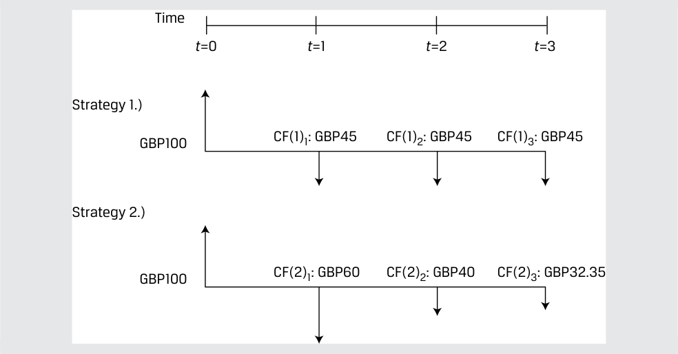
Chú thích hình ảnh: - Chiến lược 1 (Strategy 1): Đầu tư $100\text{ GBP}$ tại $t=0$; nhận các dòng tiền $CF(1)_1 = 45\text{ GBP}$ tại $t=1$, $CF(1)_2 = 45\text{ GBP}$ tại $t=2$, $CF(1)_3 = 45\text{ GBP}$ tại $t=3$. - Chiến lược 2 (Strategy 2): Đầu tư $100\text{ GBP}$ tại $t=0$; nhận các dòng tiền $CF(2)_1 = 60\text{ GBP}$ tại $t=1$, $CF(2)_2 = 40\text{ GBP}$ tại $t=2$, $CF(2)_3 = 32,35\text{ GBP}$ tại $t=3$.
Your required return for both investment strategies is 10 percent per time period.
Tỷ suất sinh lợi yêu cầu của bạn đối với cả hai chiến lược đầu tư là $10\%$ mỗi kỳ.
- Recommend which investment strategy to choose.
- Khuyến nghị nên lựa chọn chiến lược đầu tư nào.
Solution:
Lời giải (Solution):
To make a recommendation between these two strategies, we need to establish which one has the higher present value as well as whether either has a positive present value. To accomplish these objectives, we can first compute the present values of both strategies and ensure that at least one has a positive present value in addition to comparing the present values of the two strategies. Alternatively, we can calculate the difference between the cash flows at each time period to effectively create a new set of cash flows. Both solution processes should yield an equivalent numeric result when comparing the two strategies, and this numeric equivalence represents the cash flow additivity principle. Let’s first create the set of cash flows from the difference of the two strategies as shown in the diagram:
Để đưa ra khuyến nghị giữa hai chiến lược này, chúng ta cần xác định xem chiến lược nào có giá trị hiện tại cao hơn cũng như liệu có chiến lược nào mang lại giá trị hiện tại ròng dương hay không. Để đạt được các mục tiêu này, trước tiên chúng ta có thể tính giá trị hiện tại của cả hai chiến lược và đảm bảo rằng ít nhất một chiến lược có giá trị hiện tại dương bên cạnh việc so sánh giá trị hiện tại của hai chiến lược với nhau. Ngoài ra, chúng ta có thể tính mức chênh lệch giữa các dòng tiền tại mỗi kỳ để tạo ra một tập hợp các dòng tiền mới. Cả hai quy trình giải đều phải cho ra một kết quả số học tương đương khi so sánh hai chiến lược, và sự tương đương về mặt số học này thể hiện nguyên lý cộng dòng tiền. Trước hết, hãy tạo tập hợp các dòng tiền từ hiệu số của hai chiến lược như được thể hiện trong sơ đồ sau:
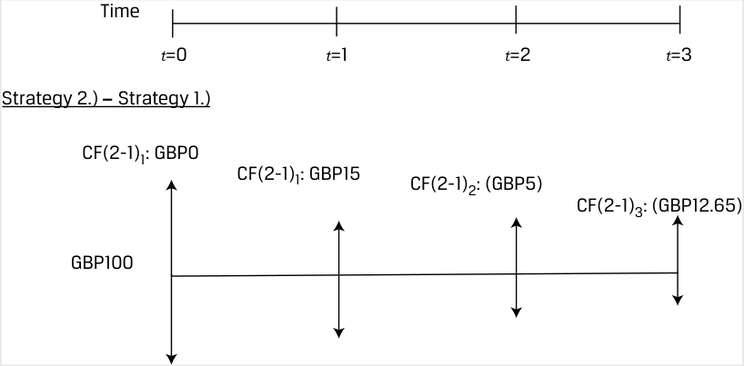
Chú thích hình ảnh (Chiến lược 2 – Chiến lược 1): Dòng tiền chênh lệch tại $t=0$ là $0\text{ GBP}$; tại $t=1$ là $+15\text{ GBP}$; tại $t=2$ là $-5\text{ GBP}$; tại $t=3$ là $-12,65\text{ GBP}$.
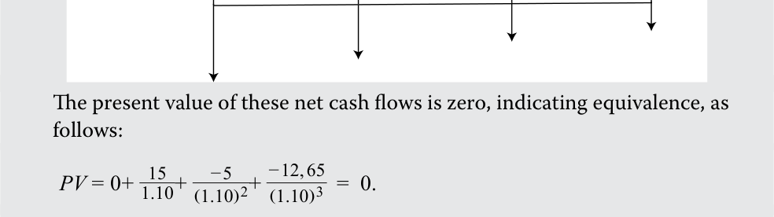
The conclusion from this analysis is that the two strategies are economically equivalent; therefore you should have no preference for one over the other. We must also determine whether these strategies are economically valuable. To do so, let’s calculate the present value of each strategy individually.
Giá trị hiện tại của các dòng tiền ròng chênh lệch này bằng không, cho thấy sự tương đương nhau, như sau:
Kết luận rút ra từ phân tích này là hai chiến lược tương đương nhau về mặt kinh tế (economically equivalent); do đó bạn không nên có sự ưu tiên nào cho chiến lược này hơn chiến lược kia. Chúng ta cũng phải xác định xem liệu các chiến lược này có mang lại giá trị kinh tế hay không. Để làm điều đó, hãy tính giá trị hiện tại ròng của từng chiến lược riêng lẻ.
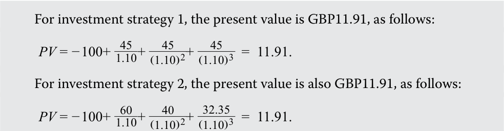
Both investment strategies are valuable in that the present value of the sums of their cash flows are positive. Since the present values are identical, subtracting the present value of strategy 1 from the present value of strategy 2 is zero (i.e., 11.91 – 11.91). Either strategy is recommended as both are valuable and have equal present values.
Đối với chiến lược đầu tư 1, giá trị hiện tại ròng là $11,91\text{ GBP}$, như sau:
Đối với chiến lược đầu tư 2, giá trị hiện tại ròng cũng là $11,91\text{ GBP}$, như sau:
In the following sections, we apply the cash flow additivity principle to three different economic situations and further illustrate the principle of no arbitrage by comparing two economically equivalent strategies in each situation.
Cả hai chiến lược đầu tư đều có giá trị ở chỗ giá trị hiện tại của tổng các dòng tiền của chúng đều mang dấu dương. Vì các giá trị hiện tại giống hệt nhau, nên việc lấy giá trị hiện tại của chiến lược 2 trừ đi giá trị hiện tại của chiến lược 1 sẽ bằng không (tức là $11,91 - 11,91$). Khuyến nghị có thể chọn bất kỳ chiến lược nào vì cả hai đều mang lại giá trị kinh tế và có giá trị hiện tại bằng nhau.
Trong các mục tiếp theo, chúng ta áp dụng nguyên lý cộng dòng tiền vào ba tình huống kinh tế khác nhau và minh họa sâu hơn về nguyên lý không có kinh doanh chênh lệch giá (no arbitrage) bằng cách so sánh hai chiến lược tương đương nhau về mặt kinh tế trong từng tình huống.
Implied Forward Rates Using Cash Flow Additivity
Lãi suất kỳ hạn ngầm định sử dụng Tính cộng Dòng tiền (Implied Forward Rates Using Cash Flow Additivity)
Consider two risk-free discount bonds with different maturities as follows:
Xét hai trái phiếu chiết khấu phi rủi ro có kỳ hạn khác nhau như sau:
One-year bond: r 1 = 2.50%
Two-year bond: r 2 = 3.50%
-
Trái phiếu kỳ hạn một năm: $r_1 = 2,50\%$
-
Trái phiếu kỳ hạn hai năm: $r_2 = 3,50\%$
A risk neutral investor seeking to earn a return on GBP100 over a two-year investment horizon has two possible strategies:
Một nhà đầu tư trung lập với rủi ro (risk-neutral investor) đang tìm cách kiếm tỷ suất sinh lợi trên $100\text{ GBP}$ trong khung thời gian đầu tư hai năm có hai chiến lược khả thi:
Investment strategy 1: Invest today for two years at a known annualized yield of 3.50 percent. Using Equation 5, we may solve for the future value in two years ( FV2 ) as follows:
- Chiến lược đầu tư 1: Đầu tư ngay hôm nay trong hai năm ở mức lợi suất quy đổi theo năm đã biết là $3,50\%$. Sử dụng Phương trình 5, chúng ta có thể giải tìm giá trị tương lai sau hai năm ($\text{FV}_2$) như sau:
GBP100 = FV 2 / (1+ r 2)2 ;
FV 2 = GBP107.12.
Investment strategy 2: Invest today for one year at a known yield of 2.50 percent and reinvest in one year’s time for one year at a rate of F 1,1 (the oneyear forward rate starting in one year).
- Chiến lược đầu tư 2: Đầu tư ngay hôm nay trong một năm ở mức lợi suất đã biết là $2,50\%$ và tái đầu tư vào thời điểm một năm sau cho kỳ hạn một năm tiếp theo ở mức lãi suất $F_{1,1}$ (lãi suất kỳ hạn một năm bắt đầu sau một năm – one-year forward rate starting in one year).
These two strategies are summarized in Exhibit 10:
Hai chiến lược này được tóm tắt trong Bảng 10 (Exhibit 10):
Exhibit 10: Implied Forward Rate Example
Bảng 10: Ví dụ về Lãi suất kỳ hạn ngầm định (Exhibit 10: Implied Forward Rate Example)
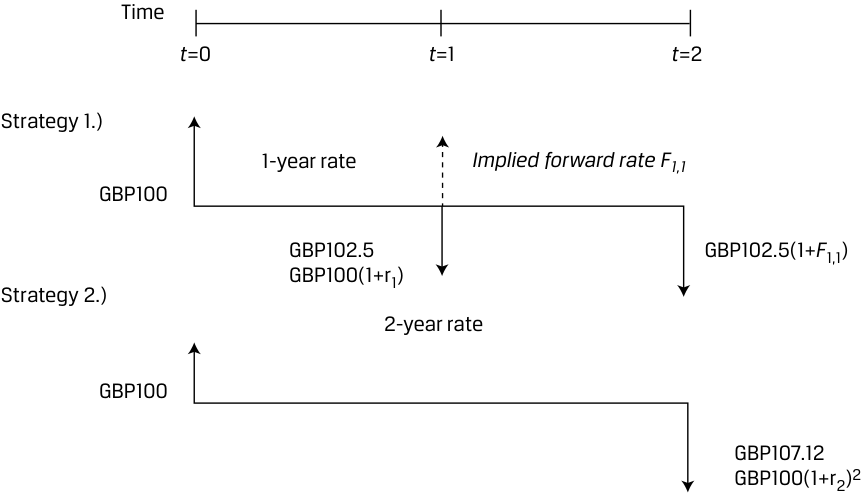
Chú thích hình ảnh: - Nhánh trên: Đầu tư $100\text{ GBP}$ tại $t=0$ theo lãi suất 1 năm ($r_1$) để có $100(1+r_1) = 102,5\text{ GBP}$ tại $t=1$, sau đó tái đầu tư theo lãi suất kỳ hạn ngầm định $F_{1,1}$ để nhận $102,5(1+F_{1,1})$ tại $t=2$. - Nhánh dưới: Đầu tư $100\text{ GBP}$ tại $t=0$ theo lãi suất 2 năm ($r_2$) để nhận $100(1+r_2)^2 = 107,12\text{ GBP}$ tại $t=2$.
Under the cash flow additivity principle, a risk-neutral investor would be indifferent between strategies 1 and 2 under the following condition:
Theo nguyên lý cộng dòng tiền, một nhà đầu tư trung lập với rủi ro sẽ bàng quan (indifferent) giữa chiến lược 1 và chiến lược 2 dưới điều kiện sau đây:
FV 2 = PV 0×(1+ r 2)2 = PV 0×(1 + r 1)(1+ F 1,1), ~~(25)~~
GBP107.12 = GBP100 (1.025)(1+ F 1,1), and
và
F 1,1 = 4.51%.
Chúng ta có thể sắp xếp lại Phương trình 25 để giải tìm $F_{1,1}$ một cách tổng quát như sau:
We can rearrange Equation 25 to solve for F 1,1 in general as follows:
- F 1,1 = (1 + r 2)2 /(1 + r 1) – 1.
Để minh họa lý do tại sao lãi suất kỳ hạn một năm phải bằng $4,51\%$, hãy giả sử một nhà đầu tư có thể khóa chặt (lock in) mức lãi suất một năm là $5\%$ bắt đầu sau một năm. Chiến lược kinh doanh chênh lệch giá (arbitrage strategy) sau đây sẽ tạo ra một khoản lợi nhuận phi rủi ro:
To illustrate why the one-year forward interest rate must be 4.51 percent, let’s assume an investor could lock in a one-year rate of 5 percent starting in one year. The following arbitrage strategy generates a riskless profit:
1. Vay $100\text{ GBP}$ trong hai năm với lãi suất $3,50\%$ và đồng ý trả $107,12\text{ GBP}$ sau hai năm.
1. Borrow GBP100 for two years at 3.50 percent and agree to pay GBP107.12 in two years.
2. Đầu tư $100\text{ GBP}$ trong năm thứ nhất với lãi suất $2,50\%$ và trong năm thứ hai với lãi suất $5\%$, nhờ đó nhận được $107,63\text{ GBP}$ sau hai năm.
2. Invest GBP100 for the first year at 2.50 percent and in year two at 5 percent, so receive GBP107.63 in two years.
3. The combination of these two strategies above yields a riskless profit of GBP0.51 in two years with zero initial investment.
3. Sự kết hợp của hai chiến lược trên mang lại khoản lợi nhuận phi rủi ro là $0,51\text{ GBP}$ sau hai năm với số vốn đầu tư ban đầu bằng không.
This set of strategies illustrates that forward rates should be set such that investors cannot earn riskless arbitrage profits in financial markets. This is demonstrated by comparing two economically equivalent strategies (i.e., borrowing for two years at a two-year rate versus borrowing for two one-year horizons at two different rates) The forward interest rate F 1,1 may be interpreted as the breakeven one-year reinvestment rate in one year’s time.
Tập hợp các chiến lược này minh họa rằng lãi suất kỳ hạn phải được thiết lập sao cho các nhà đầu tư không thể kiếm được lợi nhuận kinh doanh chênh lệch giá phi rủi ro trên các thị trường tài chính. Điều này được chứng minh bằng cách so sánh hai chiến lược tương đương nhau về mặt kinh tế (tức là vay trong hai năm ở mức lãi suất hai năm so với vay qua hai kỳ hạn một năm liên tiếp ở hai mức lãi suất khác nhau). Lãi suất kỳ hạn $F_{1,1}$ có thể được diễn giải là lãi suất tái đầu tư hòa vốn kỳ hạn một năm (breakeven one-year reinvestment rate) vào thời điểm một năm sau.
EXAMPLE 13
VÍ DỤ 13 (EXAMPLE 13)
Forward Interest Rate Changes
Những thay đổi trong Lãi suất kỳ hạn (Forward Interest Rate Changes)
At its June 2022 meeting, the US Federal Reserve surprised markets by raising its target interest rate by a greater-than-expected 75 bps and suggested further increases in the future in response to sharply higher inflation. Exhibit 11 shows one-year and two-year US Treasury strip prices per USD100 at the end of May 2022 and after the Fed’s decision in June:
Tại cuộc họp tháng 6 năm 2022, Cục Dự trữ Liên bang Hoa Kỳ (Fed) đã gây bất ngờ cho thị trường khi nâng lãi suất mục tiêu thêm 75 điểm cơ bản (bps) — cao hơn mức dự kiến — và gợi ý về các đợt tăng lãi suất tiếp theo trong tương lai nhằm ứng phó với mức lạm phát tăng vọt. Bảng 11 (Exhibit 11) cho thấy giá trái phiếu Kho bạc Hoa Kỳ tách lãi (US Treasury strip) kỳ hạn một năm và hai năm trên mỗi $100\text{ USD}$ mệnh giá vào cuối tháng 5 năm 2022 và sau quyết định của Fed vào tháng 6:
Exhibit 11: One- and Two-Year US Treasury Strip Prices
Bảng 11: Giá Trái phiếu Kho bạc Hoa Kỳ Tách lãi Kỳ hạn Một năm và Hai năm (Exhibit 11: One- and Two-Year US Treasury Strip Prices)
| Date | PV(1y) | PV(2y) |
|---|---|---|
| 31 May 2022 | 98.028 | 95.109 |
| 15 June 2022 | 97.402 | 93.937 |
| Ngày (Date) | $\text{PV}(1y)$ | $\text{PV}(2y)$ |
|---|---|---|
| 31 tháng 5 năm 2022 | 98,028 | 95,109 |
| 15 tháng 6 năm 2022 | 97,402 | 93,937 |
- Using the information in Exhibit 11, show the change in the breakeven oneyear reinvestment in one year’s time ( F1,1 ).
- Sử dụng thông tin trong Bảng 11, hãy tính mức thay đổi trong lãi suất tái đầu tư hòa vốn kỳ hạn một năm bắt đầu sau một năm ($F_{1,1}$).
Solution:
Lời giải (Solution):
62 bps or 0.62 percent
62 bps hay $0,62\%$
First, we use Equation 18 to solve for each market discount rate r . For example, in the case of the two-year discount bond on 15 June:
Trước hết, chúng ta sử dụng Phương trình 18 để giải tìm từng mức lãi suất chiết khấu thị trường $r$. Ví dụ, trong trường hợp trái phiếu chiết khấu kỳ hạn hai năm vào ngày 15 tháng 6:
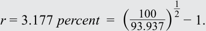
The following table summarizes the respective discount bond rates:
Bảng sau đây tóm tắt các mức lãi suất trái phiếu chiết khấu tương ứng:
| Date | r1 | r2 |
|---|---|---|
| 31 May 2022 | 2.012% | 2.539% |
| 15 June 2022 | 2.667% | 3.177% |
| Ngày (Date) | $r_1$ | $r_2$ |
|---|---|---|
| 31 tháng 5 năm 2022 | 2,012% | 2,539% |
| 15 tháng 6 năm 2022 | 2,667% | 3,177% |
Solve for the respective forward rates ( F 1,1) by rearranging Equation 25: F 1,1 = (1+ r 2)2 /(1+ r 1) – 1.
Giải tìm các mức lãi suất kỳ hạn tương ứng ($F_{1,1}$) bằng cách sắp xếp lại Phương trình 25: $F_{1,1} = (1 + r_2)^2 / (1 + r_1) - 1$.
F1,1 (31 May): F1,1 = 3.069% = (1 + 2.539%)2 /(1 + 2.012%) – 1. F1,1 (15 June): F1,1 = 3.689% = (1 + 3.177%)2 /(1 + 2.667%) – 1.
- $\underline{F_{1,1}\text{ (31 tháng 5):}}$ $F_{1,1} = 3,069\% = (1 + 2,539\%)^2 / (1 + 2,012\%) - 1$.
- $\underline{F_{1,1}\text{ (15 tháng 6):}}$ $F_{1,1} = 3,689\% = (1 + 3,177\%)^2 / (1 + 2,667\%) - 1$.
While the higher r1 and r2 in mid-June shows that investors have factored the immediate 75 bp increase into their nominal discount rate, the 62 bp (0.62 percent) increase in F1,1 is a measure of expected future rate increases given that the one-year nominal rate of return starts in one year’s time. Note also that in a rising rate environment, F1,1 > r2 , as shown in the following diagram comparing r1 , r2 and F1,1 on 31 May (lower rates) to 15 June (higher rates).
Trong khi mức $r_1$ và $r_2$ cao hơn vào giữa tháng 6 cho thấy các nhà đầu tư đã phản ánh đợt tăng 75 bps tức thời vào lãi suất chiết khấu danh nghĩa của họ, thì mức tăng 62 bps ($0,62\% = 3,689\% - 3,069\%$) của $F_{1,1}$ là thước đo phản ánh các đợt tăng lãi suất dự kiến trong tương lai do lãi suất danh nghĩa kỳ hạn một năm này bắt đầu sau một năm nữa. Cũng cần lưu ý rằng trong môi trường lãi suất đang tăng lên, $F_{1,1} > r_2$, như được thể hiện trong sơ đồ sau đây so sánh $r_1$, $r_2$ và $F_{1,1}$ vào ngày 31 tháng 5 (lãi suất thấp hơn) với ngày 15 tháng 6 (lãi suất cao hơn).
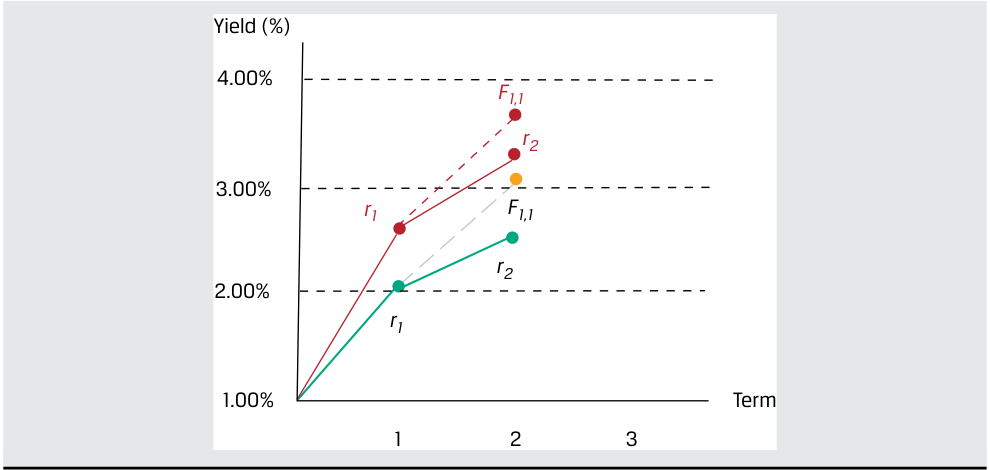
Chú thích hình ảnh: Trục tung biểu diễn Lợi suất (Yield (%)) từ $1,00\%$ đến $4,00\%$; trục hoành biểu diễn Kỳ hạn (Term). Đường thấp hơn (ngày 31/5) và đường cao hơn (ngày 15/6) đều dốc lên với $r_1 < r_2 < F_{1,1}$.
Forward Exchange Rates Using No Arbitrage
Tỷ giá hối đoái kỳ hạn sử dụng Nguyên lý Không có Kinh doanh Chênh lệch giá (Forward Exchange Rates Using No Arbitrage)
We now extend the principle of cash flow additivity to an economic scenario involving different currencies.
Assume that you have USD1,000 to invest for six months. You are considering a riskless investment in either US or Japanese six-month government debt. Let’s assume that the current exchange rate between Japanese yen (JPY) and US dollars (USD) is 134.40 (i.e., JPY134.40 = USD1). The six-month Japanese yen risk-free rate is assumed to be 0.05 percent, and the six-month US dollar risk-free rate is 2.00 percent. This example assumes continuous compounding.
Bây giờ chúng ta mở rộng nguyên lý cộng dòng tiền sang một kịch bản kinh tế liên quan đến các đồng tiền khác nhau.
Investment strategy 1: Invest USD1,000 in a six-month US Treasury bill
At time t = 0: Invest USD1,000 at the 2.00 percent US-dollar risk-free rate for six months.
Giả sử bạn có $1.000\text{ USD}$ để đầu tư trong sáu tháng. Bạn đang cân nhắc một khoản đầu tư phi rủi ro vào nợ chính phủ kỳ hạn sáu tháng của Hoa Kỳ hoặc của Nhật Bản. Giả sử tỷ giá hối đoái hiện hành (tỷ giá giao ngay – spot exchange rate) giữa đồng yên Nhật (JPY) và đồng đô la Mỹ (USD) là $134,40$ (tức là $134,40\text{ JPY} = 1\text{ USD}$). Lãi suất phi rủi ro kỳ hạn sáu tháng của đồng yên Nhật được giả định là $0,05\%$ (quy đổi theo năm), và lãi suất phi rủi ro kỳ hạn sáu tháng của đồng đô la Mỹ là $2,00\%$ (quy đổi theo năm). Ví dụ này giả định ghép lãi liên tục (continuous compounding).
At time t = T in six months: Receive USD1,010.05 (= 1,000e(0.02 × 0.5) ). Investment strategy 2: Convert the USD1,000 into Japanese yen at the current exchange rate of 134.40, invest in a six-month Japanese Treasury, and convert this known amount back into US dollars in six months at a sixmonth forward exchange rate set today of 133.096.
At time t = 0: Convert USD1,000 into JPY134,400. Lend the JPY134,400 at the 0.05 percent JPY risk-free rate for six months.
- Chiến lược đầu tư 1: Đầu tư $1.000\text{ USD}$ vào tín phiếu Kho bạc Hoa Kỳ kỳ hạn sáu tháng.
- Tại thời điểm $t = 0$: Đầu tư $1.000\text{ USD}$ ở mức lãi suất phi rủi ro đồng đô la Mỹ là $2,00\%$ trong sáu tháng.
-
Tại thời điểm $t = T$ sau sáu tháng: Nhận về $1.010,05\text{ USD}$ ($= 1.000e^{(0,02 \times 0,5)}$).
-
Chiến lược đầu tư 2: Chuyển đổi $1.000\text{ USD}$ sang đồng yên Nhật theo tỷ giá hối đoái hiện hành là $134,40$, đầu tư vào tín phiếu Kho bạc Nhật Bản kỳ hạn sáu tháng, và chuyển đổi số tiền đã biết trước này trở lại sang đồng đô la Mỹ sau sáu tháng theo tỷ giá hối đoái kỳ hạn sáu tháng (six-month forward exchange rate) được thiết lập ngay hôm nay là $133,096$.
- Tại thời điểm $t = 0$: Chuyển đổi $1.000\text{ USD}$ thành $134.400\text{ JPY}$. Cho vay $134.400\text{ JPY}$ ở mức lãi suất phi rủi ro đồng JPY là $0,05\%$ trong sáu tháng.
- Tại thời điểm $t = T$ sau sáu tháng: Nhận về số tiền thu hồi khoản vay bằng đồng JPY là $134.433,60\text{ JPY}$ ($= 134.400e^{(0,0005 \times 0,5)}$). Đổi số tiền thu hồi khoản vay bằng đồng JPY sang đô la Mỹ theo tỷ giá kỳ hạn là $133,096$ để nhận về $1.010,05\text{ USD}$ ($= 134.433,60 / 133,096$).
At time t = T in six months: Receive JPY loan proceeds of 134,433.60 (= 134,400e(0.0005 × 0.5) ). Exchange JPY loan proceeds for US dollars at the forward rate of 133.096 to receive USD1010.05 (=134,433.60/133.096).
These two strategies are economically equivalent in that both involve investing USD1000 at t = 0 and receiving USD1010.05 in six months. The element that links these two strategies is the six-month forward exchange rate of 133.096 JPY/USD. If this forward rate is set above or below 133.096, an arbitrage opportunity would exist for investors converting between Japanese yen and US dollars. Exhibit 12 provides a visual layout of the two strategies.
Hai chiến lược này tương đương nhau về mặt kinh tế ở chỗ cả hai đều liên quan đến việc đầu tư $1.000\text{ USD}$ tại $t = 0$ và nhận về $1.010,05\text{ USD}$ sau sáu tháng. Yếu tố liên kết hai chiến lược này lại với nhau chính là tỷ giá hối đoái kỳ hạn sáu tháng ở mức $133,096\text{ JPY/USD}$. Nếu tỷ giá kỳ hạn này được thiết lập cao hơn hoặc thấp hơn mức $133,096$, một cơ hội kinh doanh chênh lệch giá sẽ xuất hiện cho các nhà đầu tư thực hiện chuyển đổi qua lại giữa đồng yên Nhật và đồng đô la Mỹ. Bảng 12 (Exhibit 12) cung cấp sơ đồ trực quan của hai chiến lược này.
Exhibit 12: No-Arbitrage Condition in the Foreign Exchange Market
Bảng 12: Điều kiện Không có Kinh doanh Chênh lệch giá trên Thị trường Ngoại hối (Exhibit 12: No-Arbitrage Condition in the Foreign Exchange Market)
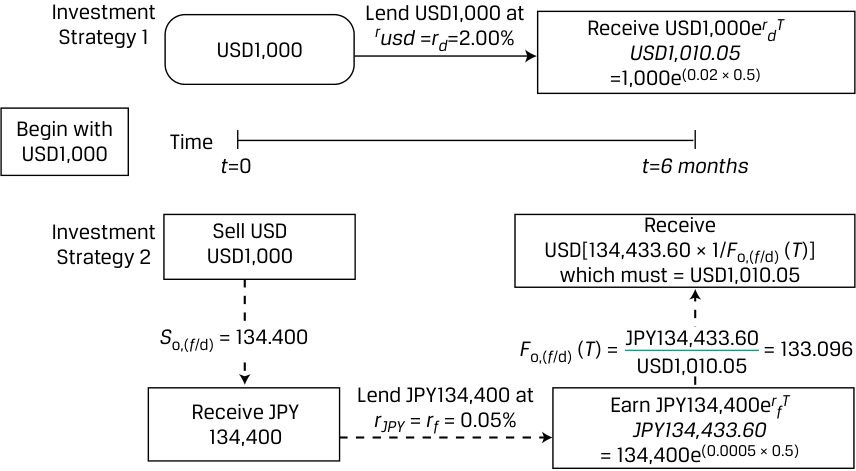
Chú thích hình ảnh: - Chiến lược đầu tư 1 (Investment Strategy 1): Bắt đầu với $1.000\text{ USD}$ tại $t=0$, cho vay ở mức $r_{\text{USD}} = r_d = 2,00\%$, nhận về $1.000e^{r_d T} = 1.000e^{(0,02 \times 0,5)} = 1.010,05\text{ USD}$ tại $t = 6\text{ tháng}$. - Chiến lược đầu tư 2 (Investment Strategy 2): Bán $1.000\text{ USD}$ theo tỷ giá giao ngay $S_{0,(f/d)} = 134,400$ để nhận $134.400\text{ JPY}$; cho vay $134.400\text{ JPY}$ ở mức $r_{\text{JPY}} = r_f = 0,05\%$ để thu được $134.400e^{r_f T} = 134.433,60\text{ JPY}$ sau 6 tháng; chuyển đổi lại sang USD theo tỷ giá kỳ hạn $F_{0,(f/d)}(T) = \frac{134.433,60\text{ JPY}}{1.010,05\text{ USD}} = 133,096$.
EXAMPLE 14
VÍ DỤ 14 (EXAMPLE 14)
Foreign Exchange Forward Rates in a Changing Interest Rate Environment
Tỷ giá hối đoái kỳ hạn trong Môi trường Lãi suất Thay đổi (Foreign Exchange Forward Rates in a Changing Interest Rate Environment)
Central banks responded differently to the sharp rise in inflation during 2022. For example, while the Fed raised rates by 75 bps to 1.75 percent in mid-June, the Bank of England opted for a more gradual approach, raising its benchmark rate by just 25 bps to 1.25 percent. Exhibit 13 compares one-year US Treasury strip rates ( rUSD ) from the prior example to UK gilt strip rates ( rGBP) over the same time frame:
Các ngân hàng trung ương đã phản ứng khác nhau trước sự gia tăng đột biến của lạm phát trong năm 2022. Ví dụ, trong khi Fed nâng lãi suất thêm 75 bps lên mức $1,75\%$ vào giữa tháng 6, Ngân hàng Trung ương Anh (Bank of England) lại chọn cách tiếp cận từ từ hơn, chỉ nâng lãi suất chuẩn thêm 25 bps lên mức $1,25\%$. Bảng 13 (Exhibit 13) so sánh lãi suất trái phiếu Kho bạc Hoa Kỳ tách lãi kỳ hạn một năm ($r_{\text{USD}}$) từ ví dụ trước với lãi suất trái phiếu chính phủ Anh tách lãi (UK gilt strip rates – $r_{\text{GBP}}$) trong cùng khung thời gian:
Exhibit 13: Comparison of US Treasury Strip Rates
Bảng 13: So sánh Lãi suất Trái phiếu Chính phủ Tách lãi của Hoa Kỳ và Anh (Exhibit 13: Comparison of US Treasury Strip Rates)
| Date | rUSD | rGBP |
|---|---|---|
| 31 May 2022 | 2.012% | 1.291% |
| 15 June 2022 | 2.667% | 1.562% |
| Ngày (Date) | $r_{\text{USD}}$ | $r_{\text{GBP}}$ |
|---|---|---|
| 31 tháng 5 năm 2022 | 2,012% | 1,291% |
| 15 tháng 6 năm 2022 | 2,667% | 1,562% |
- If we assume the USD/GBP spot price of 1.2602 (or USD1.2602 per GBP1.00) from 31 May remains constant, how does the change in risk-free US dollars versus British pounds rates affect the one-year USD/GBP forward rate?
- Nếu chúng ta giả định tỷ giá giao ngay USD/GBP ở mức $1,2602$ (hay $1,2602\text{ USD}$ trên mỗi $1,00\text{ GBP}$) từ ngày 31 tháng 5 giữ nguyên không đổi, sự thay đổi trong lãi suất phi rủi ro của đồng đô la Mỹ so với đồng bảng Anh ảnh hưởng như thế nào đến tỷ giá kỳ hạn một năm USD/GBP?
Solution:
Lời giải (Solution):
The no-arbitrage USD/GBP forward rate increases from 1.2693 to 1.2742. Assume an investor has GBP1,000 to invest for one year in a British-pound or US-dollar risk-free discount bond. The US dollars needed to purchase GBP1 in one year must have a spot price equal to the discounted future price.
Tỷ giá kỳ hạn không có kinh doanh chênh lệch giá USD/GBP tăng từ $1,2693$ lên $1,2742$. Giả sử một nhà đầu tư có $1.000\text{ GBP}$ để đầu tư trong một năm vào trái phiếu chiết khấu phi rủi ro bằng đồng bảng Anh hoặc bằng đồng đô la Mỹ. Số đô la Mỹ cần thiết để mua $1\text{ GBP}$ sau một năm phải có mức giá giao ngay bằng với giá trị tương lai đã chiết khấu.
As of 31 May:
Tính đến ngày 31 tháng 5:
Domestic Strategy: Invest GBP1,000 at the 1.291 percent one-year British-pound risk-free rate to receive GBP1,012.99 (= 1,000e(0.01291) ) in one year.
-
Chiến lược nội địa (Domestic Strategy): Đầu tư $1.000\text{ GBP}$ ở mức lãi suất phi rủi ro một năm của đồng bảng Anh là $1,291\%$ để nhận về $1.012,99\text{ GBP}$ ($= 1.000e^{(0,01291)}$) sau một năm.
-
Chiến lược nước ngoài (Foreign Strategy): Chuyển đổi $1.000\text{ GBP}$ theo tỷ giá $\text{USD/GBP} = 1,2602$ để nhận được $1.260,20\text{ USD}$, số tiền này được đầu tư ở mức lãi suất phi rủi ro một năm của đồng đô la Mỹ là $2,012\%$ sẽ tạo ra số tiền thu về là $1.285,81\text{ USD}$ ($= 1.260,20e^{(0,02012)}$) sau một năm.
Foreign Strategy: Convert GBP1,000 at USD/GBP1.2602 to receive USD1,260.20, which invested at the one-year US-dollar risk-free rate of 2.012 percent generates a return of USD1,285.81 (=1,260.20 e(0.02012) ) in one year.
The no-arbitrage USD/GBP forward rate as of 31 May is therefore equal to 1.2693 (= USD1,285.81/GBP1,012.99).
Do đó, tỷ giá kỳ hạn không có kinh doanh chênh lệch giá USD/GBP tính đến ngày 31 tháng 5 bằng $1,2693$ ($= \text{1.285,81 USD} / \text{1.012,99 GBP}$).
As of 15 June:
Tính đến ngày 15 tháng 6:
Domestic Strategy: Invest GBP1,000 at the 1.562 percent one-year British-pound risk-free rate to receive GBP1,015.74 (= 1,000e(0.01562) ) in one year.
-
Chiến lược nội địa (Domestic Strategy): Đầu tư $1.000\text{ GBP}$ ở mức lãi suất phi rủi ro một năm của đồng bảng Anh là $1,562\%$ để nhận về $1.015,74\text{ GBP}$ ($= 1.000e^{(0,01562)}$) sau một năm.
-
Chiến lược nước ngoài (Foreign Strategy): Chuyển đổi $1.000\text{ GBP}$ theo tỷ giá $1,2602$ để nhận được $1.260,20\text{ USD}$, số tiền này được đầu tư ở mức lãi suất phi rủi ro một năm của đồng đô la Mỹ là $2,667\%$ sẽ mang lại $1.294,26\text{ USD}$ ($= 1.260,20e^{(0,02667)}$) sau một năm.
Foreign Strategy: Convert GBP1,000 at 1.2602 to receive USD1,260.20, which invested at the one-year US-dollar risk-free rate of 2.667 percent returns USD1,294.26 (=1,260.20 e(0.02667) ) in one year.
The no-arbitrage USD/GBP forward rate as of 15 June is equal to 1.2742 (= USD1,294.26/GBP1,015.74).
Tỷ giá kỳ hạn không có kinh doanh chênh lệch giá USD/GBP tính đến ngày 15 tháng 6 bằng $1,2742$ ($= \text{1.294,26 USD} / \text{1.015,74 GBP}$).
As of mid-June, an investor agreeing to exchange US dollars for British pounds in one year must deliver more US dollars (1.2742 versus 1.2693) in exchange for GBP1 than if the same contract had been entered at the end of May. The greater increase in rUSD widens the interest rate differential (rUSD – rGBP), causing US dollars to depreciate on a forward basis versus British pounds over the period. Differently put, the expectation for US-dollar depreciation on a forward basis versus British pounds would require a higher US-dollar interest rate to attract investors to US dollars versus British pounds.
Tính đến giữa tháng 6, một nhà đầu tư đồng ý đổi đô la Mỹ lấy bảng Anh sau một năm phải giao nhiều đô la Mỹ hơn ($1,2742$ so với $1,2693$) để đổi lấy $1\text{ GBP}$ so với trường hợp cùng hợp đồng đó được ký kết vào cuối tháng 5. Mức tăng lớn hơn của $r_{\text{USD}}$ làm nới rộng mức chênh lệch lãi suất ($r_{\text{USD}} - r_{\text{GBP}}$), khiến đồng đô la Mỹ giảm giá trên cơ sở kỳ hạn (depreciate on a forward basis) so với đồng bảng Anh trong giai đoạn đó. Nói cách khác, kỳ vọng về sự giảm giá của đồng đô la Mỹ trên cơ sở kỳ hạn so với đồng bảng Anh sẽ đòi hỏi mức lãi suất đồng đô la Mỹ cao hơn để thu hút các nhà đầu tư nắm giữ đồng đô la Mỹ so với đồng bảng Anh.
Option Pricing Using Cash Flow Additivity
Định giá Quyền chọn sử dụng Tính cộng Dòng tiền (Option Pricing Using Cash Flow Additivity)
Let’s assume an asset has a current price of 40 Chinese yuan (i.e., CNY40). The asset is risky in that its price may rise 40 percent to CNY56 during the next time period or its price may fall 20 percent to CNY32 during the next time period.
Giả sử một tài sản có mức giá hiện hành là 40 nhân dân tệ Trung Quốc (tức $40\text{ CNY}$). Tài sản này có rủi ro ở chỗ giá của nó có thể tăng $40\%$ lên mức $56\text{ CNY}$ trong kỳ tiếp theo hoặc có thể giảm $20\%$ xuống mức $32\text{ CNY}$ trong kỳ tiếp theo.
An investor wishes to sell a contract on the asset in which the buyer of the contract has the right, but not obligation, to buy the noted asset for CNY50 at the end of the next time period. We can apply the principle of cash flow additivity to establish no-arbitrage pricing for this contract.
Một nhà đầu tư muốn bán một hợp đồng dựa trên tài sản đó, trong đó người mua hợp đồng có quyền, nhưng không có nghĩa vụ (the right, but not obligation), được mua tài sản nêu trên với giá $50\text{ CNY}$ vào cuối kỳ tiếp theo. Chúng ta có thể áp dụng nguyên lý cộng dòng tiền để thiết lập mức giá không có kinh doanh chênh lệch giá (no-arbitrage pricing) cho hợp đồng này.
The binomial tree in Exhibit 14 summarizes the two possible future outcomes of the asset:
Cây nhị thức (binomial tree) trong Bảng 14 (Exhibit 14) tóm tắt hai kết quả có thể xảy ra trong tương lai của tài sản:
Exhibit 14: One-Period Binomial Tree for the Asset’s Price
Bảng 14: Cây nhị thức Một kỳ cho Giá của Tài sản (Exhibit 14: One-Period Binomial Tree for the Asset’s Price)
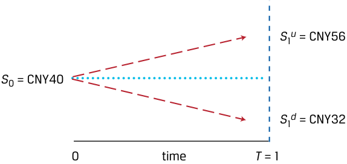
Chú thích hình ảnh: Tại thời điểm $0$, giá tài sản là $S_0 = 40\text{ CNY}$. Tại thời điểm $T = 1$, giá tăng lên $S_1^u = 56\text{ CNY}$ hoặc giảm xuống $S_1^d = 32\text{ CNY}$.
The contract value under the two scenarios is as follows (shown visually in Exhibit 15):
Giá trị hợp đồng dưới hai kịch bản như sau (được thể hiện trực quan trong Bảng 15):
-
Price Increase: The 40 percent increase results in a contract value of CNY 6 (=CNY56 − CNY50), as the contract owner will choose to buy the asset at CNY50 and is able to sell it at a market price of CNY56.
-
Price Decrease: The 20 percent decrease results in a contract value of zero (CNY0), as the contract owner will choose not to buy the asset at CNY50 when the market price is only CNY32.
-
Giá tăng (Price Increase): Mức tăng $40\%$ dẫn đến giá trị hợp đồng là $6\text{ CNY}$ ($= \text{56 CNY} - \text{50 CNY}$), bởi vì người sở hữu hợp đồng sẽ chọn mua tài sản ở mức giá $50\text{ CNY}$ và có thể bán nó ở mức giá thị trường là $56\text{ CNY}$.
-
Giá giảm (Price Decrease): Mức giảm $20\%$ dẫn đến giá trị hợp đồng bằng không ($0\text{ CNY}$), bởi vì người sở hữu hợp đồng sẽ chọn không mua tài sản ở mức giá $50\text{ CNY}$ khi giá thị trường chỉ là $32\text{ CNY}$.
Exhibit 15: One-Period Binomial Tree for the Contract’s Price
Bảng 15: Cây nhị thức Một kỳ cho Giá của Hợp đồng (Exhibit 15: One-Period Binomial Tree for the Contract’s Price)
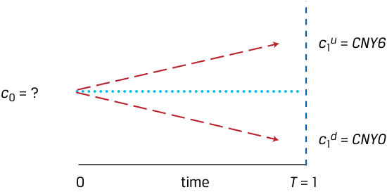
Chú thích hình ảnh: Tại thời điểm $0$, giá hợp đồng là $c_0 = ?$. Tại thời điểm $T = 1$, giá trị hợp đồng là $c_1^u = 6\text{ CNY}$ (nếu giá tài sản tăng) hoặc $c_1^d = 0\text{ CNY}$ (nếu giá tài sản giảm).
Consider the position of the contract seller as follows:
Hãy xét vị thế của người bán hợp đồng như sau:
-
At t = 0, the contract value is c 0.
-
At t = 1, the contract value is either CNY6 (if the underlying asset rises to CNY56) or CNY0 (if the underlying stock falls to CNY32).
-
Tại $t = 0$, giá trị hợp đồng là $c_0$.
-
Tại $t = 1$, giá trị hợp đồng là $6\text{ CNY}$ (nếu tài sản cơ sở tăng lên $56\text{ CNY}$) hoặc $0\text{ CNY}$ (nếu cổ phiếu cơ sở giảm xuống $32\text{ CNY}$).
The initial contract value c 0 is unknown and may be determined using cash flow additivity and no-arbitrage pricing. That is, the value of the contract and the underlying asset in each future scenario may be used to construct a risk-free portfolio, or a portfolio where the value is the same in both scenarios. For example, assume at t = 0 an investor creates a portfolio in which the contract is sold at a price of c 0 and 0.25 units of the underlying asset are purchased. This portfolio is called a replicating portfolio in that it is designed specifically to create a matching future cash flow stream to that of a risk-free asset. Denoting the value of the portfolio as V at t = 0 and at t = 1 under both the price increase and price decrease scenarios, we have the following:
Giá trị hợp đồng ban đầu $c_0$ là chưa biết và có thể được xác định bằng cách sử dụng nguyên lý cộng dòng tiền và định giá không có kinh doanh chênh lệch giá. Nghĩa là, giá trị của hợp đồng và tài sản cơ sở trong từng kịch bản tương lai có thể được sử dụng để xây dựng một danh mục đầu tư phi rủi ro (risk-free portfolio), hay một danh mục đầu tư mà giá trị của nó là như nhau trong cả hai kịch bản. Ví dụ, giả sử tại $t = 0$, một nhà đầu tư tạo ra một danh mục trong đó bán một hợp đồng ở mức giá $c_0$ và mua $0,25$ đơn vị tài sản cơ sở. Danh mục này được gọi là danh mục mô phỏng (replicating portfolio) ở chỗ nó được thiết kế đặc biệt để tạo ra một chuỗi dòng tiền tương lai khớp với chuỗi dòng tiền của một tài sản phi rủi ro. Ký hiệu giá trị của danh mục là $V$ tại $t = 0$ và tại $t = 1$ dưới cả hai kịch bản tăng giá và giảm giá, chúng ta có:
-
V 0 = 0.25 × 40 – c 0,
-
V 1u = 0.25 ×56 – 6 = 8, and
-
V 1d = 0.25 × 32 – 0 = 8.
-
$V_0 = 0,25 \times 40 - c_0$,
-
$V_1^u = 0,25 \times 56 - 6 = 8$, và
-
$V_1^d = 0,25 \times 32 - 0 = 8$.
As can be seen, the value of the replicating portfolio is equal to CNY8 regardless of whether the price of the asset increases or decreases. Because of this, the portfolio is risk-free and can be discounted as a risk-free asset. The payoffs for these two scenarios are shown in Exhibit 16.
Như có thể thấy, giá trị của danh mục mô phỏng bằng $8\text{ CNY}$ bất kể giá của tài sản tăng hay giảm. Chính vì điều này, danh mục đầu tư là phi rủi ro và có thể được chiết khấu như một tài sản phi rủi ro. Giá trị nhận về (payoffs) cho hai kịch bản này được thể hiện trong Bảng 16 (Exhibit 16).
Exhibit 16: Call Option Replication
Bảng 16: Mô phỏng Quyền chọn Mua (Exhibit 16: Call Option Replication)
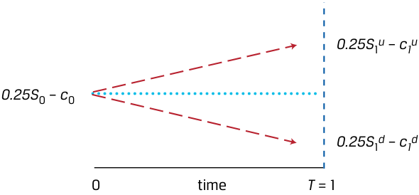
Chú thích hình ảnh: Tại thời điểm $0$, giá trị danh mục là $0,25S_0 - c_0$. Tại thời điểm $T = 1$, giá trị danh mục là $0,25S_1^u - c_1^u$ (nhánh trên) hoặc $0,25S_1^d - c_1^d$ (nhánh dưới).
To solve for c0 , we set the present value of the replicating portfolio (0.25 × 40 − c0) equal to the discounted future value of the risk-free payoff of CNY8 under each outcome as in Equation 5. Assume r of 5 percent:
Để giải tìm $c_0$, chúng ta cho giá trị hiện tại của danh mục mô phỏng ($0,25 \times 40 - c_0$) bằng với giá trị tương lai đã chiết khấu của khoản thu nhập phi rủi ro $8\text{ CNY}$ dưới mỗi kết quả giống như trong Phương trình 5. Giả sử lãi suất phi rủi ro $r$ là $5\%$:
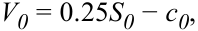
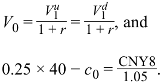
We solve for c0 as CNY2.38. Thus, CNY2.38 is a fair price for the seller of the contract to receive from the buyer of the contract.
Chúng ta giải tìm được $c_0$ bằng $2,38\text{ CNY}$. Như vậy, $2,38\text{ CNY}$ là mức giá hợp lý (fair price) để người bán hợp đồng nhận về từ người mua hợp đồng.
As part of the example above, we assumed that the investor buys 0.25 units of the asset as part of the portfolio. This proportion of the underlying asset is known as the hedge ratio in option pricing. In fact, the example just completed is a simplified process for solving for the value of a call option (this material will be covered in more detail later in the curriculum). As in our prior examples, we compare different strategies using cash flow additivity to help solve for a no-arbitrage price for a financial instrument.
Là một phần của ví dụ trên, chúng ta đã giả định rằng nhà đầu tư mua $0,25$ đơn vị tài sản như một phần của danh mục. Tỷ trọng này của tài sản cơ sở được gọi là tỷ số phòng vệ (hedge ratio) trong định giá quyền chọn. Trên thực tế, ví dụ vừa hoàn thành là một quy trình đơn giản hóa để giải tìm giá trị của một quyền chọn mua (call option) (nội dung này sẽ được đề cập chi tiết hơn ở phần sau của chương trình học). Giống như trong các ví dụ trước của chúng ta, chúng ta so sánh các chiến lược khác nhau bằng cách sử dụng nguyên lý cộng dòng tiền để giúp giải tìm mức giá không có kinh doanh chênh lệch giá cho một công cụ tài chính.
EXAMPLE 15
VÍ DỤ 15 (EXAMPLE 15)
Put Option
Quyền chọn Bán (Put Option)
A put option grants the owner the right, but not the obligation to sell a stock at a predetermined exercise price X . If we assume X = CNY50, then the put option value in one period ( p1 ) is equal to Max(0, CNY50 − S1 ).
Một quyền chọn bán (put option) trao cho người sở hữu quyền, nhưng không phải nghĩa vụ, được bán một cổ phiếu ở mức giá thực hiện (exercise price) đã định trước $X$. Nếu chúng ta giả định $X = 50\text{ CNY}$, thì giá trị quyền chọn bán sau một kỳ ($p_1$) bằng $\text{Max}(0, \text{50 CNY} - S_1)$.
- Using a one-period binomial tree model with the same prices in one year, initial stock price ( S0 ) of CNY40, and 5 percent discount rate, create a riskfree portfolio replicating the put option with 0.75 units of the underlying asset and solve for the put option price ( p0 ).
- Sử dụng mô hình cây nhị thức một kỳ với cùng các mức giá sau một năm, giá cổ phiếu ban đầu ($S_0$) là $40\text{ CNY}$, và lãi suất chiết khấu là $5\%$, hãy tạo một danh mục phi rủi ro mô phỏng quyền chọn bán với $0,75$ đơn vị tài sản cơ sở và giải tìm giá quyền chọn bán ($p_0$).
Solution:
Lời giải (Solution):
The one-period binomial model is as follows:
Mô hình nhị thức một kỳ như sau:
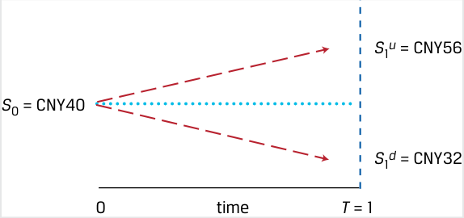
Chú thích hình ảnh: Tại thời điểm $0$, $S_0 = 40\text{ CNY}$. Tại thời điểm $T = 1$, $S_1^u = 56\text{ CNY}$ hoặc $S_1^d = 32\text{ CNY}$.
The put option value under the two scenarios is as follows:
Giá trị của quyền chọn bán dưới hai kịch bản như sau:
-
Price Increase ( p1u ): The 40 percent increase results in a put option value of CNY0, as the option owner will choose not to sell the stock at the exercise price.
-
Price Decrease ( p1d ): The 20 percent decrease results in a put option value of CNY18 (CNY50 – CNY32), as the put option owner will choose to sell the stock with a market price of CNY32 at the exercise price of CNY50.
-
Giá tăng ($p_1^u$): Mức tăng $40\%$ dẫn đến giá trị quyền chọn bán bằng $0\text{ CNY}$, bởi vì người sở hữu quyền chọn sẽ chọn không bán cổ phiếu ở mức giá thực hiện.
-
Giá giảm ($p_1^d$): Mức giảm $20\%$ dẫn đến giá trị quyền chọn bán bằng $18\text{ CNY}$ ($\text{50 CNY} - \text{32 CNY}$), bởi vì người sở hữu quyền chọn bán sẽ chọn bán cổ phiếu đang có giá thị trường $32\text{ CNY}$ ở mức giá thực hiện là $50\text{ CNY}$.
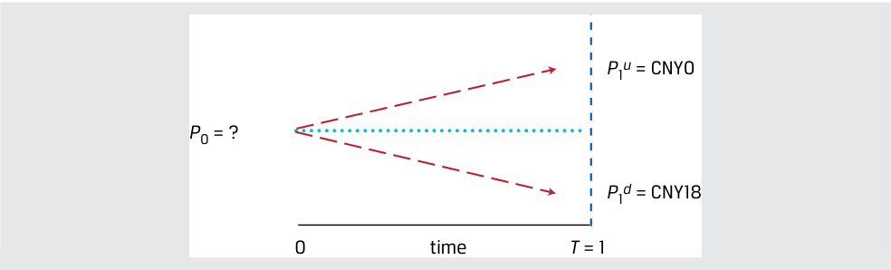
Chú thích hình ảnh: Tại thời điểm $0$, giá quyền chọn bán là $p_0 = ?$. Tại thời điểm $T = 1$, giá trị quyền chọn bán là $p_1^u = 0\text{ CNY}$ hoặc $p_1^d = 18\text{ CNY}$.
Unlike the call option, the put option increases in value as the stock price falls, so a risk-free portfolio combines a stock purchase with a purchased put option. Specifically, assume at t = 0, we sell a put option at a price of p 0 and purchase 0.75 units of the underlying stock. Portfolio values at t = 0 and t = 1 are as follows:
Khác với quyền chọn mua, quyền chọn bán tăng giá trị khi giá cổ phiếu giảm xuống, vì vậy một danh mục đầu tư phi rủi ro sẽ kết hợp việc mua cổ phiếu với một quyền chọn bán được mua vào (purchased put option). Cụ thể, giả sử tại $t = 0$, chúng ta nắm giữ (mua) một quyền chọn bán ở mức giá $p_0$ và mua $0,75$ đơn vị cổ phiếu cơ sở. (Lưu ý: Trong bản gốc tiếng Anh ghi "sell a put option" ở câu văn nhưng trong phương trình dùng dấu cộng $+p_0$, tức là mua quyền chọn bán kết hợp mua $0,75$ cổ phiếu). Giá trị danh mục đầu tư tại $t = 0$ và $t = 1$ như sau:
- V 0 = 0.75 S 0 +p 0,
- $V_0 = 0,75S_0 + p_0$,
- $V_1^u = 0,75S_1^u + p_1^u$, và
- $V_1^d = 0,75S_1^d + p_1^d$,
■ V 1u = 0.75 S 1u + p 1u , and ■ V 1d = 0.75 S 1d + p1d ,
trong đó $V_1^u = V_1^d$.
where V1u = V1d .
The value of the risk-free portfolio in one period ( V1 = 0.75 S1 + p1 ) under the two scenarios is:
Giá trị của danh mục đầu tư phi rủi ro sau một kỳ ($V_1 = 0,75S_1 + p_1$) dưới hai kịch bản là:
-
Price Increase ( V1u ): The portfolio value is CNY42 (=(0.75 × CNY56) + CNY 0)).
-
Price Decrease ( V1d ): The portfolio value is CNY42 (=(0.75 × CNY32) + CNY18)).
-
Giá tăng ($V_1^u$): Giá trị danh mục là $42\text{ CNY}$ ($= (0,75 \times \text{56 CNY}) + \text{0 CNY}$).
-
Giá giảm ($V_1^d$): Giá trị danh mục là $42\text{ CNY}$ ($= (0,75 \times \text{32 CNY}) + \text{18 CNY}$).
Solve for p 0 , by setting the present value of the replicating portfolio (0.75 S0 + p 0) equal to the discounted future value of the payoff, S0 is CNY40 and r is 5 percent:
Giải tìm $p_0$ bằng cách cho giá trị hiện tại của danh mục mô phỏng ($0,75S_0 + p_0$) bằng với giá trị tương lai đã chiết khấu của khoản thu nhập cuối kỳ, với $S_0$ là $40\text{ CNY}$ và $r$ là $5\%$:
V0 = 0.75 S0 +p0 ,
_p 0 =CNY 1.0542 − 0.75 (_CNY_40) .
Solve for p0 to be equal to CNY10. The higher put price is a result of the greater payoff of the put option versus the call option under the given parameters of the binomial model. The factors affecting option prices will be addressed in detail later in the curriculum.
Giải tìm $p_0$ thu được kết quả bằng $10\text{ CNY}$. Mức giá quyền chọn bán cao hơn này là kết quả từ khoản thu nhập cuối kỳ (payoff) lớn hơn của quyền chọn bán so với quyền chọn mua dưới các tham số đã cho của mô hình nhị thức. Các yếu tố ảnh hưởng đến giá quyền chọn sẽ được trình bày chi tiết ở phần sau của chương trình học.
~~PRACTICE PROBLEMS~~
BÀI TẬP THỰC HÀNH (PRACTICE PROBLEMS)
1. Grupo Ignacia issued 10-year corporate bonds two years ago. The bonds pay an annualized coupon of 10.7 percent on a semiannual basis, and the current annualized YTM is 11.6 percent. The current price of Grupo Ignacia’s bonds (per MXN100 of par value) is closest to:
1. Grupo Ignacia đã phát hành trái phiếu doanh nghiệp kỳ hạn 10 năm cách đây hai năm. Trái phiếu trả lãi coupon quy đổi theo năm là $10,7\%$ trên cơ sở nửa năm một lần, và lợi suất đáo hạn (YTM) quy đổi theo năm hiện hành là $11,6\%$. Mức giá hiện tại của trái phiếu Grupo Ignacia (trên mỗi $100\text{ MXN}$ mệnh giá) gần nhất với mức nào sau đây:
-
A. MXN95.47.
-
B. MXN97.18.
-
A. $95,47\text{ MXN}$.
-
B. $97,18\text{ MXN}$.
-
C. $95,39\text{ MXN}$.
C. MXN95.39.
2. Grey Pebble Real Estate tìm kiếm một khoản vay thế chấp kỳ hạn năm năm với lãi suất cố định, trả góp khấu hao hoàn toàn (fully amortizing) để tài trợ $75\%$ giá mua một tòa nhà dân cư có chi phí là $5\text{ triệu NZD}$. Lãi suất thế chấp hàng năm là $4,8\%$. Khoản thanh toán hàng tháng cho khoản vay thế chấp này sẽ gần nhất với mức nào sau đây:
2. Grey Pebble Real Estate seeks a fully amortizing fixed-rate five-year mortgage loan to finance 75 percent of the purchase price of a residential building that costs NZD5 million. The annual mortgage rate is 4.8 percent. The monthly payment for this mortgage would be closest to:
-
A. $70.424\text{ NZD}$.
-
B. $93.899\text{ NZD}$.
-
C. $71.781\text{ NZD}$.
-
A. NZD70,424.
-
B. NZD93,899.
-
C. NZD71,781.
3. Mylandia Corporation pays an annual dividend to its shareholders, and its most recent payment was CAD2.40. Analysts following Mylandia expect the company’s dividend to grow at a constant rate of 3 percent per year in perpetuity. Mylandia shareholders require a return of 8 percent per year. The expected share price of Mylandia is closest to:
3. Tập đoàn Mylandia (Mylandia Corporation) trả cổ tức hàng năm cho các cổ đông của mình, và khoản thanh toán gần đây nhất là $2,40\text{ CAD}$. Các nhà phân tích theo dõi Mylandia kỳ vọng cổ tức của công ty sẽ tăng trưởng với tốc độ không đổi là $3\%$ mỗi năm đến vĩnh viễn. Các cổ đông của Mylandia yêu cầu mức tỷ suất sinh lợi là $8\%$ mỗi năm. Giá cổ phiếu dự kiến của Mylandia gần nhất với mức nào sau đây:
-
A. CAD48.00.
-
B. CAD49.44.
-
C. CAD51.84.
-
A. $48,00\text{ CAD}$.
-
B. $49,44\text{ CAD}$.
-
C. $51,84\text{ CAD}$.
4. Suppose Mylandia announces that it expects significant cash flow growth over the next three years, and now plans to increase its recent CAD2.40 dividend by 10 percent in each of the next three years. Following the 10 percent growth period, Mylandia is expected to grow its annual dividend by a constant 3 percent indefinitely. Mylandia’s required return is 8 percent. Based upon these revised expectations, The expected share price of Mylandia stock is:
4. Giả sử Mylandia thông báo rằng công ty kỳ vọng dòng tiền sẽ tăng trưởng mạnh trong ba năm tới, và hiện có kế hoạch tăng mức cổ tức $2,40\text{ CAD}$ gần đây thêm $10\%$ trong mỗi năm của ba năm tới. Sau giai đoạn tăng trưởng $10\%$, Mylandia dự kiến sẽ tăng cổ tức hàng năm ở mức không đổi $3\%$ vô thời hạn. Tỷ suất sinh lợi yêu cầu của Mylandia là $8\%$. Dựa trên những kỳ vọng đã điều chỉnh này, giá cổ phiếu dự kiến của cổ phiếu Mylandia là:
-
A. CAD49.98.
-
B. CAD55.84.
-
C. CAD59.71.
-
A. $49,98\text{ CAD}$.
-
B. $55,84\text{ CAD}$.
-
C. $59,71\text{ CAD}$.
5. Consider a Swiss Confederation zero-coupon bond with a par value of CHF100, a remaining time to maturity of 12 years and a price of CHF89. In three years’ time, the bond is expected to have a price of CHF95.25. If purchased today, the bond’s expected annualized return is closest to:
5. Xét một trái phiếu không trả lãi định kỳ (zero-coupon bond) của Liên bang Thụy Sĩ có mệnh giá $100\text{ CHF}$, thời gian còn lại cho đến khi đáo hạn là 12 năm và mức giá hiện tại là $89\text{ CHF}$. Sau ba năm nữa, trái phiếu được kỳ vọng sẽ có mức giá là $95,25\text{ CHF}$. Nếu được mua ngay hôm nay (và bán sau ba năm), tỷ suất sinh lợi quy đổi theo năm kỳ vọng của trái phiếu gần nhất với mức nào sau đây:
-
A. 0.58 percent.
-
B. 1.64 percent.
-
A. $0,58\%$.
-
B. $1,64\%$.
C. 2.29 percent.
- C. $2,29\%$.
6. Grupo Ignacia issued 10-year corporate bonds four years ago. The bonds pay an annualized coupon of 10.7 percent on a semiannual basis, and the current price of the bonds is MXN97.50 per MXN100 of par value. The YTM of the bonds is closest to:
6. Grupo Ignacia đã phát hành trái phiếu doanh nghiệp kỳ hạn 10 năm cách đây bốn năm. Trái phiếu trả lãi coupon quy đổi theo năm là $10,7\%$ trên cơ sở nửa năm một lần, và mức giá hiện tại của trái phiếu là $97,50\text{ MXN}$ trên mỗi $100\text{ MXN}$ mệnh giá. Lợi suất đáo hạn (YTM) của trái phiếu gần nhất với mức nào sau đây:
-
A. 11.28 percent.
-
B. 11.50 percent.
-
C. 11.71 percent.
-
A. $11,28\%$.
-
B. $11,50\%$.
-
C. $11,71\%$.
7. Mylandia Corporation stock trades at CAD60.00. The company pays an annual dividend to its shareholders, and its most recent payment of CAD2.40 occurred yesterday. Analysts following Mylandia expect the company’s dividend to grow at a constant rate of 3 percent per year. Mylandia’s required return is:
7. Cổ phiếu của Tập đoàn Mylandia đang giao dịch ở mức giá $60,00\text{ CAD}$. Công ty trả cổ tức hàng năm cho các cổ đông của mình, và khoản thanh toán gần đây nhất trị giá $2,40\text{ CAD}$ vừa diễn ra vào ngày hôm qua. Các nhà phân tích theo dõi Mylandia kỳ vọng cổ tức của công ty sẽ tăng trưởng với tốc độ không đổi là $3\%$ mỗi năm. Tỷ suất sinh lợi yêu cầu của Mylandia là:
-
A. 8.00 percent.
-
B. 7.00 percent.
-
C. 7.12 percent.
-
A. $8,00\%$.
-
B. $7,00\%$.
-
C. $7,12\%$.
8. An analyst observes the benchmark Indian NIFTY 50 stock index trading at a forward price-to-earnings ratio of 15. The index’s expected dividend payout ratio in the next year is 50 percent, and the index’s required return is 7.50 percent. If the analyst believes that the NIFTY 50 index dividends will grow at a constant rate of 4.50 percent in the future, which of the following statements is correct?
8. Một nhà phân tích quan sát thấy chỉ số chứng khoán chuẩn NIFTY 50 của Ấn Độ đang giao dịch ở hệ số giá trên thu nhập dự phóng (forward P/E) là 15. Tỷ lệ chi trả cổ tức dự kiến của chỉ số trong năm tới là $50\%$, và tỷ suất sinh lợi yêu cầu của chỉ số là $7,50\%$. Nếu nhà phân tích tin rằng cổ tức của chỉ số NIFTY 50 sẽ tăng trưởng với tốc độ không đổi là $4,50\%$ trong tương lai, phát biểu nào sau đây là đúng?
-
A. The analyst should view the NIFTY 50 as overpriced.
-
B. The analyst should view the NIFTY 50 as underpriced.
-
C. The analyst should view the NIFTY 50 as fairly priced.
-
A. Nhà phân tích nên xem NIFTY 50 là đang bị định giá quá cao (overpriced).
-
B. Nhà phân tích nên xem NIFTY 50 là đang bị định giá quá thấp (underpriced).
-
C. Nhà phân tích nên xem NIFTY 50 là đang được định giá hợp lý (fairly priced).
9. If you require an 8 percent return and must invest USD500,000, which of the investment opportunities in Exhibit 1 should you prefer?
9. Nếu bạn yêu cầu mức tỷ suất sinh lợi là $8\%$ và phải đầu tư $500.000\text{ USD}$, bạn nên ưu tiên cơ hội đầu tư nào trong Bảng 1?
Exhibit 1: Investment Opportunities
Bảng 1: Các Cơ hội Đầu tư (Exhibit 1: Investment Opportunities)
| Cash flows (in thousands) | t = 0 | t = 1 | t = 2 | t = 3 |
|---|---|---|---|---|
| Opportunity 1 | −500 | 195 | 195 | 195 |
| Opportunity 2 | −500 | 225 | 195 | 160.008 |
| Dòng tiền (tính bằng nghìn USD) | $t = 0$ | $t = 1$ | $t = 2$ | $t = 3$ |
|---|---|---|---|---|
| Cơ hội 1 (Opportunity 1) | −500 | 195 | 195 | 195 |
| Cơ hội 2 (Opportunity 2) | −500 | 225 | 195 | 160,008 |
-
A. Opportunity 1
-
B. Opportunity 2
-
C. Indifferent between the two opportunities.
-
A. Cơ hội 1
-
B. Cơ hội 2
-
C. Bàng quan (Indifferent) giữa hai cơ hội đầu tư.
10. Italian one-year government debt has an interest rate of 0.73 percent; Italian two-year government debt has an interest rate of 1.29 percent. The breakeven one-year reinvestment rate, one year from now is closest to:
10. Nợ chính phủ Ý kỳ hạn một năm có lãi suất là $0,73\%$; nợ chính phủ Ý kỳ hạn hai năm có lãi suất là $1,29\%$. Lãi suất tái đầu tư hòa vốn kỳ hạn một năm, bắt đầu sau một năm kể từ bây giờ, gần nhất với mức nào sau đây:
- A. 1.01 percent.
- A. $1,01\%$.
-
B. 1.11 percent.
-
C. 1.85 percent.
-
B. $1,11\%$.
-
C. $1,85\%$.
11. The current exchange rate between the euro and US dollar is USD/EUR1.025. Risk-free interest rates for one year are 0.75 percent for the euro and 3.25 percent for the US dollar. The one-year USD/EUR forward rate that best prevents arbitrage opportunities is:
11. Tỷ giá hối đoái hiện hành giữa đồng euro và đồng đô la Mỹ là $1,025\text{ USD/EUR}$. Lãi suất phi rủi ro kỳ hạn một năm là $0,75\%$ đối với đồng euro và $3,25\%$ đối với đồng đô la Mỹ (ghép lãi liên tục). Tỷ giá kỳ hạn một năm USD/EUR giúp ngăn chặn tốt nhất các cơ hội kinh doanh chênh lệch giá là:
-
A. USD/EUR1.051.
-
B. USD/EUR1.025.
-
C. USD/EUR0.975.
-
A. $1,051\text{ USD/EUR}$.
-
B. $1,025\text{ USD/EUR}$.
-
C. $0,975\text{ USD/EUR}$.
12. A stock currently trades at USD25. In one year, it will either increase in value to USD35 or decrease to USD15. An investor sells a call option on the stock, granting the buyer the right, but not the obligation, to buy the stock at USD25 in one year. At the same time, the investor buys 0.5 units of the stock. Which of the following statements about the value of the investor’s portfolio at the end of one year is correct?
12. Một cổ phiếu hiện đang giao dịch ở mức giá $25\text{ USD}$. Sau một năm, giá trị của nó sẽ tăng lên $35\text{ USD}$ hoặc giảm xuống $15\text{ USD}$. Một nhà đầu tư bán một quyền chọn mua (call option) trên cổ phiếu này, trao cho người mua quyền, nhưng không phải nghĩa vụ, được mua cổ phiếu ở mức giá $25\text{ USD}$ sau một năm. Cùng lúc đó, nhà đầu tư mua $0,5$ đơn vị cổ phiếu. Phát biểu nào sau đây về giá trị danh mục đầu tư của nhà đầu tư vào cuối năm thứ nhất là đúng?
-
A. The portfolio has a value of USD7.50 in both scenarios.
-
B. The portfolio has a value of USD25 in both scenarios.
-
C. The portfolio has a value of USD17.50 if the stock goes up and USD7.50 if the stock goes down.
-
A. Danh mục đầu tư có giá trị là $7,50\text{ USD}$ trong cả hai kịch bản.
-
B. Danh mục đầu tư có giá trị là $25\text{ USD}$ trong cả hai kịch bản.
-
C. Danh mục đầu tư có giá trị là $17,50\text{ USD}$ nếu cổ phiếu tăng giá và $7,50\text{ USD}$ nếu cổ phiếu giảm giá.
Volume 1: Quantitative Methods
Learning Module 2 Time Value of Money in Finance
Part 4/4: Solutions (PDF Pages 92–94)
Tập 1: Phương pháp Định lượng (Volume 1: Quantitative Methods)
Học phần 2: Giá trị Thời gian của Tiền trong Tài chính (Learning Module 2: Time Value of Money in Finance)
Phần 4/4: Lời giải Bài tập Thực hành (Solutions) (Trang PDF 92–94)
~~SOLUTIONS~~
LỜI GIẢI (SOLUTIONS)
- C is correct. The coupon payments are 5.35 (=10.7/2), the discount rate is 5.8 percent (=11.6%/2) per period, and the number of periods is 16 (=8×2). Using Equation 6, the calculation is as follows:
- C là đáp án đúng. Các khoản thanh toán coupon là $5,35$ ($= 10,7 / 2$), lãi suất chiết khấu là $5,8\%$ ($= 11,6\% / 2$) mỗi kỳ, và số kỳ là $16$ ($= 8 \times 2$). Sử dụng Phương trình 6, phép tính được thực hiện như sau:

Alternatively, using the Microsoft Excel or Google Sheets PV function ( ~~PV (0.058,16,5.35,100,0))~~ also yields a result of MXN95.39. A is incorrect. MXN95.47 is the result when incorrectly using coupon payments of 10.7, a discount rate of 11.6 percent, and 8 as the number of periods. B is incorrect. MXN97.18 is the result when using the correct semiannual coupons and discount rate, but incorrectly using 8 as the number of periods.
- A is correct. The present value of the mortgage is NZD3.75 million (=0.75×5,000,000), the periodic discount rate is 0.004 (=0.048/12), and the number of periods is 60 (=5×12). Using Equation 8,
Ngoài ra, việc sử dụng hàm PV trong Microsoft Excel hoặc Google Sheets (=PV(0.058, 16, 5.35, 100, 0)) cũng cho kết quả là $95,39\text{ MXN}$.
A không đúng. $95,47\text{ MXN}$ là kết quả khi sử dụng sai các khoản thanh toán coupon là $10,7$, lãi suất chiết khấu là $11,6\%$, và số kỳ là 8.
B không đúng. $97,18\text{ MXN}$ là kết quả khi sử dụng đúng tiền lãi coupon nửa năm và lãi suất chiết khấu nửa năm, nhưng lại sử dụng sai số kỳ là 8.
0.4% (NZD3, 750, 000)
- A là đáp án đúng. Giá trị hiện tại của khoản vay thế chấp là $3,75\text{ triệu NZD}$ ($= 0,75 \times 5.000.000$), lãi suất chiết khấu định kỳ là $0,004$ ($= 0,048 / 12$), và số kỳ là $60$ ($= 5 \times 12$). Sử dụng Phương trình 8:


Alternatively, the spreadsheet PMT function may be used with the inputs stated earlier.
Ngoài ra, hàm PMT trên bảng tính có thể được sử dụng với các thông số đầu vào đã nêu ở trên.
B is incorrect. NZD93,899 is the result if NZD5 million is incorrectly used as the present value term.
B không đúng. $93.899\text{ NZD}$ là kết quả nếu sử dụng sai $5\text{ triệu NZD}$ làm giá trị hiện tại.
C is incorrect. NZD71,781 is the result if the calculation is made using 4.8 percent as the rate and 5 as the number of periods, then the answer is divided by 12.
C không đúng. $71.781\text{ NZD}$ là kết quả nếu phép tính được thực hiện bằng cách sử dụng $4,8\%$ làm lãi suất và 5 làm số kỳ, sau đó lấy đáp số chia cho 12.
- B is correct. Mylandia’s next expected dividend is CAD2.472 (=2.40×1.03), and using Equation 14,
- B là đáp án đúng. Cổ tức dự kiến tiếp theo của Mylandia là $2,472\text{ CAD}$ ($= 2,40 \times 1,03$), và sử dụng Phương trình 14:

- C is correct. Following the first step, we observe the following expected dividends for Mylandia for the next three years:
In 1 year: D1 = CAD2.64 (=2.40×1.10)
- C là đáp án đúng. Thực hiện theo bước đầu tiên, chúng ta quan sát thấy các khoản cổ tức dự kiến của Mylandia trong ba năm tới như sau:
- Sau 1 năm: $D_1 = \text{2,64 CAD}$ ($= 2,40 \times 1,10$)
- Sau 2 năm: $D_2 = \text{2,90 CAD}$ ($= 2,40 \times 1,10^2$)
- Sau 3 năm: $D_3 = \text{3,19 CAD}$ ($= 2,40 \times 1,10^3$)
In 2 years: D2 = CAD2.90 (=2.40×1.102 ) In 3 years: D3 = CAD3.19 (=2.40×1.103 )
The second step involves a lower 3 percent growth rate. At the end of year four, Mylandia’s dividend ( D4 ) is expected to be CAD3.29 (=2.40×1.103 ×1.03). At this time, Mylandia’s expected terminal value at the end of three years is CAD65.80 using Equation 17, as follows:
Bước thứ hai liên quan đến tốc độ tăng trưởng thấp hơn ở mức $3\%$. Vào cuối năm thứ tư, cổ tức của Mylandia ($D_4$) dự kiến là $3,29\text{ CAD}$ ($= 2,40 \times 1,10^3 \times 1,03$). Tại thời điểm này, giá trị cuối kỳ dự kiến (expected terminal value) của Mylandia vào cuối năm thứ ba là $65,80\text{ CAD}$ khi sử dụng Phương trình 17, như sau:


- C is correct. The FV of the bond is CHF95.25, the PV is CHF89, and the number of annual periods ( t ) is 3. Using Equation 18,
Thứ ba, chúng ta tính tổng giá trị hiện tại của các khoản cổ tức dự kiến này bằng cách sử dụng Phương trình 16:
- C là đáp án đúng. $\text{FV}$ của trái phiếu là $95,25\text{ CHF}$, $\text{PV}$ là $89\text{ CHF}$, và số kỳ hàng năm ($t$) là 3. Sử dụng Phương trình 18:
2.29 percent = (92.25/89)(1/3) − 1.
A is incorrect as the result is derived using t of 12. B is incorrect as this result is derived using a PV of CHF95.25 and an FV of 100.
(Lưu ý: Trong bản gốc tiếng Anh ghi nhầm số hiển thị là 92.25/89 nhưng kết quả tính từ 95.25/89 đúng bằng $2,29\%$.).
- A is correct. The YTM is calculated by solving for the RATE spreadsheet function with the following inputs: number of periods of 12 (=6 × 2), coupon payments of 5.35 (=10.7/2), PV of −97.50, and FV of 100. The resulting solution for RATE of 5.64 percent is in semiannual terms, so multiply by 2 to calculate annualized YTM of 11.28 percent.
A không đúng vì kết quả này được suy ra khi sử dụng $t = 12$. B không đúng vì kết quả này được suy ra khi sử dụng $\text{PV}$ là $95,25\text{ CHF}$ và $\text{FV}$ là 100 (cho 9 năm còn lại).
B is incorrect, as 11.50 percent is the result if number of periods used is eight, instead of 12. C is incorrect, as 11.71 percent is the result if the number of periods used is 6, instead of 12.
- A là đáp án đúng. YTM được tính bằng cách giải hàm RATE trên bảng tính với các thông số đầu vào sau: số kỳ là $12$ ($= 6 \times 2$), khoản thanh toán coupon là $5,35$ ($= 10,7 / 2$), $\text{PV}$ là $-97,50$, và $\text{FV}$ là $100$. Kết quả giải hàm RATE là $5,64\%$ tính theo kỳ nửa năm, vì vậy nhân với 2 để tính ra YTM quy đổi theo năm là $11,28\%$.
- C is correct. We may solve for required return based upon the assumption of constant dividend growth using Equation 21:
B không đúng, vì $11,50\%$ là kết quả nếu số kỳ sử dụng là 8 thay vì 12. C không đúng, vì $11,71\%$ là kết quả nếu số kỳ sử dụng là 6 thay vì 12.
r_ =2.40 (1.03) + 0.03 = 0.0712 . 60
- C là đáp án đúng. Chúng ta có thể giải tìm tỷ suất sinh lợi yêu cầu dựa trên giả định cổ tức tăng trưởng không đổi bằng cách sử dụng Phương trình 21:
B is incorrect as 7.00 percent is the result if we use the previous dividend of CAD2.40 instead of the next expected dividend. A is incorrect as 8.00 percent is simply the required return assumed from one of the Mylandia examples in Question Set 1 in which the price is solved to be a lower value.
B không đúng vì $7,00\%$ là kết quả nếu chúng ta sử dụng khoản cổ tức trước đó là $2,40\text{ CAD}$ thay vì khoản cổ tức dự kiến tiếp theo. A không đúng vì $8,00\%$ đơn giản là tỷ suất sinh lợi yêu cầu được giả định từ một trong các ví dụ trước của Mylandia trong đó mức giá giải ra có giá trị thấp hơn.
- B is correct. Using Equation 24, the previous input results in the following inequality:
_0.50 15 < 0.075− 0.045= 16.67 .
- B là đáp án đúng. Sử dụng Phương trình 24, các thông số đầu vào trên dẫn đến bất đẳng thức sau:
The above inequality implies that the analyst should view the NIFTY 50 as priced too low. The fundamental inputs into the equation imply a forward price to earnings ratio of 16.67 rather than 15. An alternative approach to answering the question would be to solve for implied growth using the observed forward price to earnings ratio of 15 and compare this to the analyst’s growth expectations:
Bất đẳng thức trên hàm ý rằng nhà phân tích nên xem chỉ số NIFTY 50 là đang được định giá quá thấp (underpriced). Các thông số cơ bản đưa vào phương trình hàm ý một hệ số giá trên thu nhập dự phóng là $16,67$ thay vì $15$. Một cách tiếp cận khác để trả lời câu hỏi này là giải tìm tốc độ tăng trưởng ngầm định bằng cách sử dụng hệ số giá trên thu nhập dự phóng quan sát được là 15 và so sánh con số này với kỳ vọng tăng trưởng của nhà phân tích:
_ 15 =0.50 0.075− g.
Giải tìm $g$ cho kết quả là $4,1667\%$. Vì nhà phân tích kỳ vọng tốc độ tăng trưởng cổ tức của NIFTY 50 cao hơn ở mức $4,50\%$, nên chỉ số này được xem là đang bị định giá thấp (underpriced).
Solving for g yields a result of 4.1667 percent. Since the analyst expects higher NIFTY 50 dividend growth of 4.50 percent, the index is viewed as underpriced.
- C là đáp án đúng. Sử dụng nguyên lý cộng dòng tiền (cash flow additivity), hãy so sánh hai cơ hội đầu tư bằng cách lấy Cơ hội 1 trừ đi Cơ hội 2, thu được các dòng tiền sau:
- C is correct. Using cash flow additivity, compare the two opportunities by subtracting Opportunity 2 from Opportunity 1 yielding the following cash flows:
| Dòng tiền (nghìn USD) | $t = 0$ | $t = 1$ | $t = 2$ | $t = 3$ |
|---|---|---|---|---|
| Cơ hội 1 – Cơ hội 2 | 0 | −30 | 0 | 34,992 |
Opportunity 1 – Opportunity 2 0 −30 0 34.992
Việc tìm giá trị hiện tại của các dòng tiền trên ở mức lãi suất chiết khấu $8\%$ cho thấy cả hai cơ hội đầu tư có cùng giá trị hiện tại (vì $-30/1,08 + 34,992/1,08^3 = 0$). Do đó, hai cơ hội này hoàn toàn giống hệt nhau về mặt kinh tế, và không có sự ưu tiên rõ ràng nào cho cơ hội này hơn cơ hội kia.
Finding the present value of the above cash flows at 8 percent discount rate shows that both investment opportunities have the same present value. Thus, the two opportunities are economically identical, and there is no clear preference for one over the other.
- C là đáp án đúng. Lãi suất kỳ hạn một năm (one-year forward rate) phản ánh lãi suất tái đầu tư hòa vốn kỳ hạn một năm bắt đầu sau một năm kể từ bây giờ, được tính như sau:
- C is correct. The one-year forward rate reflects the breakeven one-year reinvestment rate in one year, computed as follows: F 1,1 = (1+ r 2)2 /(1+ r 1) – 1,
- F 1,1 = (1.0129)2 /(1.0073) – 1 = 0.0185.
- A is correct. To avoid arbitrage opportunities in exchanging euros and US dollars, investors must be able to lock in a one-year forward exchange rate of USD/
- A là đáp án đúng. Để tránh các cơ hội kinh doanh chênh lệch giá khi chuyển đổi giữa đồng euro và đồng đô la Mỹ, các nhà đầu tư phải có khả năng khóa chặt một mức tỷ giá hối đoái kỳ hạn một năm là $1,051\text{ USD/EUR}$ ngay hôm nay. Phương pháp giải được trình bày dưới đây:
EUR1.051 today. The solution methodology is shown below. In one year, a single unit of euro invested risk-free is worth EUR1.0075 (=e0.0075 ). In one year, a single unit of euro converted to US dollars and then invested risk-free is worth USD1.0589 (=1.025*e0.0325 ).
To convert USD1.0589 into EUR1.0075 requires a forward exchange rate of USD/ EUR1.051 (=1.0589/1.0075).
- Sau một năm, một đơn vị đồng euro được đầu tư phi rủi ro có giá trị là $1,0075\text{ EUR}$ ($= e^{0,0075}$).
- Sau một năm, một đơn vị đồng euro được chuyển đổi sang đô la Mỹ và sau đó được đầu tư phi rủi ro có giá trị là $1,0589\text{ USD}$ ($= 1,025 \times e^{0,0325}$).
- A is correct. Regardless of whether the stock increases or decreases in price, the investor’s portfolio has a value of USD7.50 as follows:
Để chuyển đổi $1,0589\text{ USD}$ thành $1,0075\text{ EUR}$ đòi hỏi một tỷ giá hối đoái kỳ hạn là $1,051\text{ USD/EUR}$ ($= 1,0589 / 1,0075$).
If stock price goes to USD35, value = 0.5×35 – 10 = 7.50.
- A là đáp án đúng. Bất kể giá cổ phiếu tăng hay giảm, danh mục đầu tư của nhà đầu tư đều có giá trị là $7,50\text{ USD}$ như sau:
- Nếu giá cổ phiếu tăng lên $35\text{ USD}$, giá trị danh mục $= 0,5 \times 35 - 10 = 7,50\text{ USD}$.
- Nếu giá cổ phiếu giảm xuống $15\text{ USD}$, giá trị danh mục $= 0,5 \times 15 - 0 = 7,50\text{ USD}$.
If stock price goes to USD15, value = 0.5×15 – 0 = 7.50.
If the stock price rises to USD35, the sold call option at USD25 has a value to the buyer of USD10, offsetting the rise in the stock price.
Nếu giá cổ phiếu tăng lên $35\text{ USD}$, quyền chọn mua đã bán ở mức giá thực hiện $25\text{ USD}$ sẽ có giá trị đối với người mua quyền chọn là $10\text{ USD}$ (do đó là khoản nghĩa vụ $-10\text{ USD}$ đối với người bán quyền chọn), bù trừ với mức tăng của giá cổ phiếu.